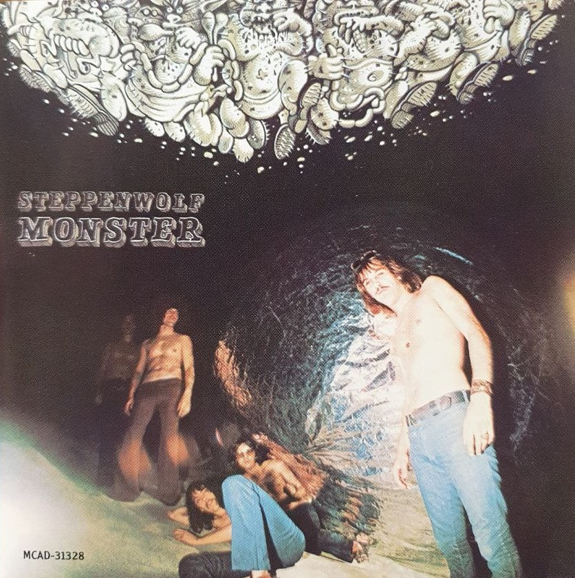

Коллекция Василевской Ирины Вячеславовны
Контактные данные +375(44)7444122.e-mail:frostseventy@gmail.com
Коллекционер — это человек, собирающий редкости в надежде на то, что они станут еще более редкими.
Сигизмунд фон Радецки
| Исполнитель | Диск | Лэйбл | Стоимость | Изображение | Примечание |
|---|---|---|---|---|---|
| 1. 3 Doors Down | The Better Life .1 | Repubic 012 153 920-2,Runout:012 153 9202 08% CW IFPI L007,molding IFPI 0384,Pressing PlantID(Stamped inner mould): MADE IN USA BY |
6 USD |  |
2000г,US,жанр Rock:Alternative Rock,Pop Rock. |
| 3 Doors Down .2 | Universal Republic Records B0011065-02,Runout(Var3):[logo EDC] B00 110 6502 01!! H,MasteringSIDCode(Var-3):IFPI L005,Mould SID Code(Var-3):IFPI 0316,Other(InnerRing): MADE IN USA BY EDC |
7,8 USD | 
|
2008,US,жанр Rock: Alternative Rock | |
| 2.10cc | Deceptive Bends**.1 | Mercury 836 948-2,Runout: MJUR 081012 |
продано=3,5p |  |
1977,Russia,жанр Rock:Pop Rock |
| 2.10cc | MirrorMirror*.2 | Grammy – ZYX 20350-2,Runout:BCVLX 00001 |
1 USD | 2002,Russia-,Без коробки только диск!!,жанр Rock:Pop Rock | |
| 3.Accept | Stalingrad (Brothers In Death) | Nuclear Blast 27361 28462,Runout:5014433 955200-2 |
продано=3,5p | .jpg) |
2012,Russia,жанр Rock:Heavy Metal |
| 4.Adriano Celenatno | C'è Sempre Un Motivo+*** | Clan Celentano – CLN 2055-6,Runout: PARAD-132,molding text:лицензия №77-191 ООО"Вальмонд"??не ПАРАД |
коллекция= USD |  |
2004,Russia-лицензия ООО"ПАРАД",За итальянский вариант дают до 250$!!,жанр- Rock,Latin,Pop стиль: Bossanova, Pop Rock, Rhythm & Blues, Vocal |
| 5.Al Di Meola | Orange And Blue .1 | Bluemoon R2 79197,Runout:GZ GC0308 PX 1440 |
2,3 USD |  |
1995,Russia,жанр Jazz |
| World Sinfonia _ La Melodia (Live In Milano)++.2 | Valiana none,Runout: MSB7665 Runout: DISK MAKERS |
25 USD |  |
2008,С АВТОГРАФОМ!!концерт в Минск,жанр Jazz,Latin,Folk,World&Country:Latin Jazz, Contemporary Jazz | |
| Elegant Gypsy / Casino.3 | Columbia 468213 2,Runout: BCVLX 00054 |
1,7 USD |  |
2010/1971a,Russia,Жанр Jazz,Rock:Jazz-Rock,Fusion | |
| 6.Alter Bridge | Blackbird .1 | Universal Republic Records 0602517467484,Runout:[4 x Universal Logo]06025 174 674-8 01 * 52022753,SID-код матрицы:IFPI LV26 |
2 USD |  |
2007,Russia,Жанр Rock:Alternative Rock, Hard Rock |
| One Day Remains .2 | Wind-Up,серия X-cellent 517855 0,Runout:Sony Music S517886-0,IFPI LV66,ООО"Элайн-М"лицензия №77-13. |
2,3 USD |  |
2004,Russia-ООО"Элайн-М",жанр Rock | |
| 7.Ambrose Slade | Beginnings* | SomeWax Recordings- SW302-2,Runout:[SomeWax logo]SOME WAX[SomeWax logo]AMBROSE SLADE • Beginnings SW302-2,SID-код пресс-формы: IFPI ZG24 |
4 USD |  |
2004/1969а,Russia-"ФОНОТЕКА МЕЛОМАНА" №1./ООО"Юрфорт" Лиц.МПТРРоссииВАФ№ 77-121,Жанр Rock:Psychedelic Rock,Glam |
| 8.Ambrosia | Ambrosia** | COE records. Cum'On EverybodyrecordsP.O.Box25 molding. |
продано= | 2005/1975a,Pirat,жанр Rock:Prog Rock | |
| 9.America | Homecoming+*.1 | Warner Bros.Records 2655-2,Runout:[Specialty logo]1 2655-2 SRC##01 ARC *M2 S1,molding none,Mastering SID Code: none |
10 USD | 1972,US,Жанр Rock:Folk Rock, Soft Rock, Classic Rock | |
| Back Pages+.2 | eONE- EOM-CD-2137, Runout:EOMCD2137 1R ,MasteringSIDCode(Variant2):IFPI L241,molding none |
продано=3p |  |
2011,Russia,Жанр Rock,Pop:Soft Rock | |
| Harbor.3 | produced by George Martin-Limited Edition AMCD 007,лиценз.соглаш.№583 30.04.1998г |
1,7 USD | 1999/1977a,?,жанр Rock,Pop | ||
| Neil Young With Crazy Horse(Americana ГРУППА) | Reprise Records- 531195-2,Runout:X37620 1.531192-2 TEXT 04 MOS2,MasteringSIDCode:IFPI L902 |
2 USD |  |
2012,Russia,жанр Rock,Folk,World,& CountryFolk Rock | |
| Hourglass+.4 | Dogtoire – DGTR 1009494,Runout:DGTR 1009494 |
0,5 USD | 1994,Russia-самодельный,жанр Rock,Soft Rock | ||
| 10.Angélique Kidjo | Djin Djin | Razor & Tie 0946 3938012 1,runout:LDR3777 AN-KI070427,IFPI none |
1,7 USD |  |
2007,Australia,жанр Pop, Folk, World, & Country стиль:African |
| 11.Aqua | Aquarius+* | NotOnLabel(Aqua)- DR-99284,Runout: DR-99284 |
коллекция= USD | 2000,Russia.жанр-Electronic:Euro House | |
| 12.Arcade Fire | The Suburbs+*** | Not on Label- Z89847,Runout:Z89847 7G MRG385-2 TEXT 01,MasteringSIDCode(Variants1,2&3):ifpi L909,molding none |
коллекция= USD |  |
2010,Russia,жанр Rock |
| 13. Arctic Monkeys=коллекция вместе | Suck It And See+**.1 | Domino DNO300,Runout:1444850 SOUND PERFORMANCE DNO300 01,Runout: 04/26/2011 09:46:54.PM #44413,Mastering SID Code: IFPI LN08 |
2 USD |  |
2011,Russia,жанр Rock: Alternative Rock, Indie Rock |
| Humbug.2 | Domino WIGCD220 Runout-Var.2:[Sound Performance logo] 020 8691 2121 WIGCD220,MasteringSIDCode-Var.2:IFPI LP76 |
2 USD |  |
2009,Russia, жанр Rock стиль:Indie Rock | |
| 14.Arcturus | Sideshow Symphonies+ | CD-Maximus CDM 0905-2390,Runout:CDM 0905-2390,MouldSIDCode:ifpi RT03,Other (Inner Ring):ООО"RMG Company"Лицензия МПТР России ВАФ № 77-18 |
2 USD |  |
2006,Russia-лицензия,жанр Rock, Art Rock, Heavy Metal. |
| 15.Asia | Phoenix+ .1 | IROND CD 08-DD603,Runout: IROND CD 08-DD603 UL 082762R ['Laser Craft' logo] www.disc.ru,: UEP-CD Лицензия МПТР России ВАФ № 77-15,MasteringSIDCode:IFPI L641,Mould SID Code:IFPI 1I10 |
коллекция=3,5 USD | 2008,Russia-IROND/книжка ,жанр Rock, Pop:Prog Rock, AOR | |
| XXX.2 | Frontiers Records FR CD 560, Runout: [Compact Disc Digital Audio logo] 98935 FR CD 560,Mould SID Code (Var-1):IFPI ADD02 |
продано=20p | 2012,Italy-книжка,жанр Rock:Prog Rock, Pop Rock | ||
| Auria +.3 | Snapper Classics SDPCD159,BP17738 SDPCD159//4060724,ifpiL055,molding ifpi RP103 |
продано=20p | 2004,Germany-книжка и обложка картон, жанр Rock | ||
| 16.Atomic Rooster | Made In England *.1 | One Way Records OW 30644,Runout:DISQUE AMERIC 09s53<670>OW30644 |
продано=3,5 USD |  |
1994/1972a,?,жанр Rock:HardRock,ProgRock,PsychedelicRock |
| 16.Atomic Rooster=коллекция вместе | Death walks behind you**.2 | ООО "ДОРА" JPCD9708517 |
2 USD |  |
1997,Russia-ООО"ДОРА",жанр Rock:Prog Rock |
| In Hearing Of .3 | Castle Music CMQCD926,Runout:CMQCD926 02,MasterSIDCode:IFPI 04AP,MasteringSIDCodeIFPI L135,на розвомфонеIFPI 0416. |
14 USD |  |
2004,UK*-картон,жанр Rock:Hard Rock, Pr og Rock | |
| Atomic Rooster**.4 | ООО "ДОРА" JPCD 9710620 |
2 USD |  |
1997,Russia-ООО "ДОРА",жанр Rock:Blues Rock, Classic Rock | |
| 17.Bachman & Turner | Bachman & Turner | RBE Music RBE002 матрица:DIDX-474792 1,Runout:DIDX-474792 1,Mastering SID Code: IFPI L328,molding none |
продано= |  |
2010,Russia-Pirat,жанр Rock-стиль classic Rock |
| 18.Bachman-Turner Overdrive+ | Not Fragile | Mercury 830 178-2 UMD,Runout:830 178 2 39@ A MADE IN USA,Mastering SID Code: IFPI L006Mould SID Code: IFPI 0376, |
6-8 USD |  |
/1974a,US,жанр Rock:Hard Rock,classic Rock |
| 19.Bad Company | Straight Shooter*+.1 | Swan Song- 7567-90333-2,Runout:BS 004 |
продано= |  |
1975,Europe-Pirat,жанрRock:Hard Rock |
| 19.Bad Company | Rough Diamonds++.2 | Swan Song/ООО"ДОРА"- 7567-92452-2,Runout:-jpcd9707419 |
коллекция= 2,5 USD | 
|
1982,Russia-ООО"ДОРА"(левыйцветдиска не найден),жанр Rock:Classic Rock |
| Burnin' Sky**+++++.3 | ООО"ДОРА"- JPCD9702157,Runout:JPCD9702157,Лиц.согл.N 2132/МЗ-97 междуРАО и ООО"ДОРА"от20.01.97.ЗаявкаN40. |
продано= 3p |  |
1997/1975а,Russia-ООО"ДОРА",жанр Rock:Blues Rock | |
| Run With The Pack**++.4 | Swan Song,ООО "СПЮРК"- 92435-2,Runout:3 92435-2 SRC**01/Лиц.сог.№2111/МЗ от 12.11.96 междуРАО иООО СПЮРК.Заявка№166. |
коллекция= 2,5 USD |  |
1996/1976а,Russsia-лицензия ООО "СПЮРК"самый мною любимый,жанр Rock:Hard Rock | |
| Desolation Angels*++.5 | ООО "ДОРА",Swan Song–none JPCD9707461 Runout:JPCD9707461/Лиценз.соглаш№2132/М3-97 междуРАО и ООО "ДОРА"от 20.01.97.Заявка № 447 |
коллекция= 2,5 USD |  |
1997/1979а,Russia-ООО "ДОРА".жанр Rock стиль: Classic Rock | |
| Stories Told & Untold*++.6 | EastWest Records America- 7559-61976-2,Runout:SYM 00119 |
продано= 3p |  |
1996,Russia-Pirat,жанрRock,Pop:Hard Rock,Pop Rock,Arena Rock | |
| Fame And Fortune++.7 | Motor Records,AGAT Company Runout:NORD GROUP 0023(97235118) IFPI L061/лиц.согл.№2165/М3-97междуРАО и АОЗТ"АГАТ". |
продано= 3p |  |
1997-2005/1986a,Russia-лицензия AGAT Company,жанр Rock:Classic Rock | |
| 20.Barclay James Harvest | Greatest Hits | EG records 3352-97740-2,Runout: CDP-3352-97740-2 |
2 USD |  |
,Bulgaria,жанр Electronic, RockSoft Rock, Classic Rock: |
| 21.Beardfish | Mammoth+ | Superball Music 0543-2,Runout (CD): 7558-05432-CD + + K159801,Mastering SID Code (CD): IFPI LB41. |
2 USD |  |
2011,Russia,жанр Rock:Prog Rock |
| 22.Belle Epoque | Now | CD-Maximum CDM 0602-1023,Runout:CDM 0602-1023,molding лиценз.соглаш.77/4 от |
2 USD |  |
2002/1979a,Russia-CD-Maximum, жанр Electronic |
| 23.Black Country Communion | Afterglow .№1 | J&R Adventures PRAR935488,runout:2220119,Mastering SID Code (Variant 2, printed in very small print on the same band as Matrix / Runout): ifpi LP7812? |
продан= 3,5p/1 USD |  |
2012,Russia,жанр Rock,Blues Rock:Hard Rock |
| Black Country Communion-1. №2 | J&R Adventures PRAR92338,Runout:08/23/2010 10:38:10 PM #28839 1332210 D1 01,Mastering SID Code: IFPI LN08,Mould SID Code: none |
продано= 3,5p |  |
2010,Russia,жанр Rock: Hard Rock | |
| Black Country Communion-2. №3 | J&R Adventures PRAR931387 матрица:PRAR931387 |
продано= 5p/1,7 USD |  |
2011,Russia,жанр Rock -стиль Hard Rock | |
| 24.Black Mountain | Wilderness Heart+ | Jagjaguwar – JAG175,Runout(Variant1):WWW.BELLWETHERMFG.COM 0ER08<7205> JAG175CD,MasteringSIDCode(Variant1):IFPI L489,Mould SID Code (Variant 1):IFPI 8102 |
12 USD |  |
2010г,US,жанр Rock: Stoner Rock |
| 25.Black Rebel Motorcycle Club | Beat The Devil's Tattoo+** | Abstract Dragon VVR730519,18 03 2010 and штрихкод |
1,8 USD |  |
2010,Russia,жанр Rock:Blues Rock, Garage Rock, Indie Rock, Country Rock |
| 26.Black Sabbath | Headless Cross** | Not On Label (Black Sabbath) DNL 0415 |
продано= 3руб |  |
1989,Bulgaria,жанр Rock:Heavy Metal |
| 27.Black Stone Cherry | Folklore And Superstition | Roadrunner Records RR 7940-2, Runout (Variant 1): manufactured by optimal media production A838049-01 |
1,7 USD |  |
2008,Russia,жанр Rock:Stoner Rock, Southern Rock, Hard Rock |
| 28.Blackfield | Blackfield II | Snapper Music SMACD900,матрица:SMACD900P |
1,6 USD |  |
2007,Russia,жанр Rock : Alternative Rock |
| 29.Blackmore's Night | Fires At Midnight .1 | Steamhammer SPV 088-72430 CDE,Runout:ALT-033 |
продано=5p/1,6 USD |  |
2001,Russia, жанр Rock: Folk Rock |
| Secret Voyage .2 | Steamhammer SPV 91782 CD-E,Runout: [Arvato Digital Services logo] 52694524/91782 21,molding none. |
продано=5p/1,6 USD |  |
2008,Russia,жанр Rock, Folk, World, & Country | |
| Autumn Sky.3 | Spinefarm Records SPI373CD,2749221,Runout(Var2):[Universal 4logo]06025 274 922-1 01 * 52595075,MasteringSIDCode:IFPI LV27 |
продано=5p/1,6 USD |  |
2010,Russia,жанр Rock, Folk, World, & Country стиль Folk Rock | |
| 30. Blink-182 | Blink-182*** | ООО"Олимпий" none,Runout:LXZ110791,runout:ООО"Олимпий"лицензия№77-81 |
продано=1,8/5p USD | 2003,Russia-ООО"Олимпий",жанр-rock: Punk, Pop Rock | |
| 31.Blood, Sweat And Tears | Child Is Father To The Man *.1 | Legacy – CK 63987,Runout:24746 ST2. |
продано=1,6 USD/5p |  |
2000,PIRAT,жанр Jazz, Rock-стиль Blues Rock, Psychedelic Rock, Jazz-Rock, Pop Rock |
| 31.Blood, Sweat And Tears | B, S & T 4 .2 ** | Columbia,Legacy -CK 66422,Runout (Var3):E3 1A CK66422 03,Mastering SID Code (Variant 3): IFPI L423,Mould SID Code (Variant 3): IFPI 7285. |
11 USD |  |
1996,US*-оригинал все совпадает,жанр Jazz, Rock -стиль Soul, Soul-Jazz, Ballad |
| 32. Blue Öyster Cult | Tyranny And Mutation _ Spectres.1 | Not On Label (Blue Öyster Cult) JPCD 2003069,runout:JPCD2003069 |
продано= 3,5p/1 USD |  |
Unofficial Release,жанр Rock: Hard Rock, Classic Rock, Heavy Metal, Rock & Roll |
| Agents Of Fortune / Cultosaurus Erectus.2 | Not On Label (Blue Öyster Cult) none, Runout: GP-SSR 000281 |
продано= 3,5p/1 USD |  |
Russia,жанр Rock | |
| 33.Bob Dylan | Modern Times*.1 | Columbia 82876 87606 2,Runout: GP-06 GT 000697 |
2 USD |  |
2006,Russia, жанр Blues Rock, Folk Rock |
| Together Through Life *.2 | Sony Music 88697438932,Runout (Variant 1): Sony DADC A0101162807-0101 02,IFPI L555,Mould SID Code: none |
1,7 USD |  |
2009,Russia,жанр Rock: | |
| 34.Bob Seger | Face The Promise | Capitol Records CDP 0946 3 54506 2 0,Runout (Variant 5): A 7301 094635450620 E60804-12 4X,MasteringSIDCode (Var5):IFPI L383,MouldSIDCode(Var5):IFPI 6100 |
12 USD |  |
2006,US,жанр Rock: Blues Rock, Country Rock, Rock & Roll, Classic Rock |
| 35.Boston | Don't Look Back.1 | Epic 82876 82241 2,Runout: CTDP-144746 3,Mastering SID Code: ifpi L328,Mould SID Code: ifpi 5100. |
коллекция= 10 USD |  |
2006/1978a,US,жанр Rock: Hard Rock, Classic Rock |
| Boston.2 | Epic,Legacy 69699 86322 2,Runout (Variant 1): CTDP-144585 3,Mastering SID Code (Variant 1): IFPI L320,Mould SID Code:IFPI 7231. |
коллекция= 12 USD | 2006/1976a,US-*,жанр Rock:Hard Rock, Pop Rock, Arena Rock | ||
| 36.Brand X | Unorthodox Behaviour++ | Caroline Blue Plate – CAROL 1387-2,Runout:DIDX-223318 1,MasteringSIDCode:IFPI L329,MouldSIDCode: IFPI 7272 |
12 USD |  |
1989/1976,US,жанрJazz, Rock-стиль Art Rock, Jazz-Funk |
| 37.Brazen Abbot | My Resurrection | Irond IROND CD 05-DD259, Runout:IROND CD 05-DD259 |
3,5 USD |  |
2005,Russia-IROND,жанр Rock:Hard Rock |
| 38. Buckcherry | All Night Long | Eleven Seven Music ESM 770,Runout: 84519-ESM770-CD + + J985605 IFPI L028 |
1,7 USD |  |
2010,Russia, жанр Rock: Hard Rock |
| 39.Buffalo Springfield++ | Buffalo Springfield Again | ATCO Records – 7567-90391-2 матрица:756790391-2,WMME,MasteringSIDCode(Variant2,3,4,5,6):IFPI L012,Mould SID Code: IFPI 05E1 |
9 USD |  |
1999/1967а,Europe-Germany,жанр Rock-стиль Folk Rock, Acoustic, Classic Rock |
| 40.CAGE the Elephant | Thank you happy birthday | Jive 88697-81421-2, Runout: DIDX-619444 L4 1A 02,Mastering SID Code: IFPI L424 |
коллекция=2 USD |  |
2011,Russia, жанр Rock |
| 41. Cake | Showroom Of Compassion | Upbeat Records none,Runout: Z99351 M1S1 4 CKE2 69933-2 TEXT 01,Mastering SID Code: ifpi L909 |
1,7 USD |  |
2011,?, жанр Rock:Alternative Rock |
| 42.California Guitar Trio | Echoes | Inner Knot INK7716,Runout: V08CD 65262 |
1,7 USD |  |
|
| 43.Candy Dulfer | Candy Store | Heads Up International HUCD3131,Runout: CTDX-003007 |
1,7 USD |  |
2007,Russia,жанр Jazz, Latin, Funk _ Soul |
| 44.Caravan | In The Land Of Grey And Pink** .1 | SomeWax Recordings,ООО «ЮРФОРТ» SW339-2,Runout:[SomeWax logo]SOME WAX[SomeWaxlogo]Caravan • INTHE LAND OF GREY AND PINK SW339-2,Mould SID Code: IFPI ZG24,molding: Лицензия МПТР России ВАФ № 77-121. |
3,5 USD |  |
2004,Russia-ФОНОТЕКА МЕЛОМАНА №2./ООО «ЮРФОРТ»,жанр:Rockстиль: Pop Rock, Prog Rock |
| 45.Cat Stevens | Tea For The Tillerman | A&M Records CD-4280,DIDX 583 Runout:DIDX-000583 7 🝊 🝊🝊 🝊🝊🝊🝊🝊,molding zvezda. | продано=6 USD |  |
1970а,US*,жанр Rock: Pop, Folk, World, & Country:FolkRock,PopRock,Folk |
| 46.Chicago | The very best of Chicago .1 | Arcade 9902295,Runout: CHICAGO THE VERY BEST |
3 USD |  |
1996,?,жанр Jazz, Rock, Pop:Soft Rock,Pop Rock,Fusion,Jazz-Rock, AOR |
| Chicago VII *.2 | Chicago Records Inc. CRD-3007,Runout: SDS 1090. |
1,7 USD |  |
1997,Russia,жанр Jazz,Rock:Soft Rock,Pop Rock, Jazz-Rock | |
| 47.Chick Corea | The Mad Hatter | Polygram,Verve Records- 519 799-2,Runout:519 799-2 01 /,molding-made in germany PMDC H,Mould SID Code: IFPI 01L1. |
15,95 USD |  |
1993/1978a,Germany,жанр-Jazz,Rock:Jazz-Rock,Fusion |
| 48.Chickenfoot | Chickenfoot .1 | Ear Music 0197532ERE,Runout: manufactured by optimal media production A967215-01,Label Code:LC 01666. |
2 USD | 2011,Russia,жанр Rock: Hard Rock | |
| III .2 | eONE EOM-CD-2377,Runout: 99923 23792-1 EOM-CD-2379 |
2 USD | 2011,Russia,жанр Rock: Hard Rock | ||
| 49.Chris Isaak | Beyond The Sun .1 CDx2шт | Vasguard 78212-2,Runout (Disc 1): 1570782121-1,Runout (Disc 2): 1570782122-2. |
2 USD |  |
2011,Russia,жанр Rock:Rock & Roll |
| Mr.Lucky .2 | Reprise Records- 518008-2,Runout:X31594 1 518008-2 TEXT 01,Mastering SID Code: ifpi L902. |
2 USD |  |
2009,Russia,жанр Rock стиль:Blues Rock, Southern Rock, Pop Rock: | |
| 50. Chris Thompson | Timeline | Voiceprint VP452CD, Runout:EDC Blackburn Ltd VP452CD 01 MasteringSIDCode:IFPI L136 |
2 USD |  |
2009,Russia,жанр Rock, Pop |
| 51.Eric Clapton | Clapton | Reprise Records 9362496359,Runout:[Warner Logo] 936249635-9 V01 DSK/,MasteringSIDCode:IFPI L016. |
1,7 USD | 2010,Russia,жанр Rock, Blues стиль: Acoustic, Blues Rock, Classic Rock, Folk Rock | |
| 52.Colosseum | Valentyne Suite / Daughter Of Time | Not On Label (Colosseum) – CLCLCD 707002 Runout:NOTE!! |
продано= |  |
2005/1970-1970a,*PIRAT-картинка несовпадает с сайтом,жанр Jazz, Rock.Cтиль:Jazz-Rock, Prog Rock |
| 53.Creedence Clearwater Revival=коллекция вместе | Cosmo's Factory *+.1 | Fantasy FAN-30880,Runout:DIDX-141947 1 A05,IFPI L327,MouldSIDCode:IFPI 5008. |
13,78 USD |  |
2008,US*-картон,жанр Rock:Blues Rock,Rock & Roll, Classic Rock |
| Willy And The Poor Boys / Cosmo's Factory .2 | CD-Maximum cdm 1199-371,Runout:CDM 1199-371,MasteringSIDCode:IFPI LD01,Other(mouldedtextbyring):ООО "АРК-СИСТЕМ" ЛИЦЕНЗИЯ МПТР РОССИИ ВАФ №77-4. |
2 USD |  |
2001,Russia-"CD-Maximum",жанр Rock:Blues Rock, Southern Rock, Classic Rock | |
| Bayou Country / Green River .3 | CD-Maximum CDM 1199-370,Runout: CDM 1199-370,Runout (InnermouldRing):ООО"АРК-систем"Лиц.МПТР РоссииВАФ№77-4,MasteringSIDCode:IFPI LD01 |
2 USD |  |
2001,Russia-CD-Maximum,жанр Rock:Blues Rock, Folk Rock, Hard Rock, Classic Rock | |
| 54.Crosby,Stills,Nash & Young=коллекция вместе | American Dream *++.1 | Atlantic – 7 81888-2,Runout:OLYPHANT X7619 3 81888-2 RE-01 03 M1S3,MasteringSIDCode:ifpi L902,Mould SID Code: IFPI 2U3L. |
10 USD |  |
1988,*US,жанр Rock: Folk Rock |
| Déjà Vu.2 | SomeWax Recordings –SW297-2,матрица:Crosby, Stills,Nash&Young•DEJA VU SW297-2,Mould SID Code: IFPI ZG24,Other(inner mould area):ООО"Юрфорт"ЛицензияМПТР России ВАФ №77-121. |
Продан=3,5 USD |  |
2004,Russia-ФОНОТЕКА МЕЛОМАНА-3,ООО"Юрфорт",жанр Rock:Folk Rock, Country Rock, Classic Rock | |
| After The Storm.3 | Atlantic 7567-82654-2,Runout: 756782654-2 WME,MasteringSIDCode: IFPI L011,MouldSIDCode:есть логотип-буква. |
12,8 USD |  |
1994,Europe,жанр Rock:Pop Rock | |
| Looking Forward .4 | Reprise Records 9 47436,Runout (Variant 6): [WEA Mfg. Olyphant Logo] X9446 1 47436-2 01 M1S5,Mastering SID Code (Variant 6): ifpi L902,Mould SID Code (Variant 6): IFPI 2U2P. |
19 USD |  |
1999,US*,жанр Rock, Pop, Folk, World, & Country стиль: Folk Rock | |
| 55. Crosby, Stills & Nash | Crosby, Stills & Nash | Rhino Records,Atlantic R2 73290 Runout:Z48939 3 R2 73290-2 01,M1S3,MasteringSIDCode:IFPI L909,Mould SID Code:IFPI 2U4C. |
12 USD |  |
2006,US,жанр Rock:Rock, Country Rock |
| 56.Dave Matthews Band | Away From The World* | RCA 88725-45257-2,Runout (Outer ring): DIDX-818485 1,Mastering SIDCode:IFPI L329,molding none. |
2 USD |  |
2012,Russia,жанр Rock, Folk, World, & Country |
| 57.David Bowie | Reality* | Columbia none, Runout: RZT David Bowie |
2 USD |  |
2003,Europe-Barcode: 078573265249?,жанр Rock: Alternative Rock |
| 58. Deadsoul Tribe | A Lullaby For The Devil | Inside Out Music SPV 79572 CD-E,Runout: [Sonopress logo] 52370902/79572 21,IFPI L046 |
1,7 USD |  |
2007,Russia,жанр Rock: Prog Rock, Heavy Metal |
| 59. Dee Dee Bridgewater | Red Earth - A Malian Journey | DDB Records 0602517228290,Runout:EI20032Z. |
1,7 USD |  |
2007,-Barcode: 602517228290,жанр Jazz,Folk,World & Country: African |
| 60. Deep purple | Rapture of the Deep.1 | Eagle Records CD-362-48570-20,Runout: OL 0509. |
3 USD |  |
2005,Russia-Pirat,жанр Rock: Hard Rock |
| Burn**.2 | Purple Records CDP 7 92611 2,Runout: MS 1740023,Mastering SID Code:IFPI L201. |
продано= |  |
1998/1974a,Pirat,жанр Rock | |
| Machine Head***.3 | Not On Label (Deep Purple) CD 043,Runout: 20P2-2605 G |
коллекция=3,5 USD |  |
/1972а,Russia,жанр Rock: Hard Rock | |
| Machine Head+.4 лицензия+коробка(2xcd) | EMI 7243 8 59506 2 9, Runout (CD1 Var.4):859507 2 . 1 1 : 2 : EMI SWINDON-IFPI L041-MouldSIDCode(CD1 Var.4):IFPI 1421,(CD2 Var.4): 859507 2 . 1 : 1 : 4 EMI SWINDON-IFPI L041-MouldSIDCode(CD2 Var.4):IFPI 1421 |
коллекция=50 USD | .jpg) |
1997,UK-*картонная большая коробка,жанр Rock:Hard Rock | |
| Bananas*.5 | EMI 7243 5 91048 2 9б, Runout: LXZ 080631 |
3 USD |  |
2003,Russia,жанр Rock: Hard Rock | |
| Stormbringer*.6 | EMI CDP 7 91084 2,Runout:CDP 7910842. |
продано= |  |
1995/1974a,PIRAT, жанр Rock | |
| Purpendicular*.7 | BMG –74321338022,Runout(mirrored): DISCTRONICS S 743213-38022 01,IFPI 8769,. |
3 USD |  |
1996,Russia,жанр Rock | |
| Группа Ian Gillan & Tony Iommi.альбом "WhoCares" CDx2шт .8 | Armoury Records,Ear Music ARM250782,Runout(CD1):ARM25078-2 220543402,IFPI LN08,Mould SID Code(CD1): IFPI JI23. |
2 USD |  |
2012,US/CD2- утерян,ОРИГИНАЛ!жанр Rock : Heavy Metal | |
| Deep Purple -легенды рока**.9 | 20 USD |  |
книга о группе Deep Purple -легенды рока. Включает Книгу песен /Биографию / Ноты /Редкая книга. | ||
| 61.Devin Townsend Project | Ki | Inside Out Music IOMCD 312,Runout:[Arvato Digital Services logo]53606816/28032 22,MasteringSIDCode: IFPI LB50.Rights Society: GEMA |
1,7 USD |  |
2009,Russia,Жанр Electronic, Rock |
| 62.Dire Straits=коллекция вместе | Love Over Gold*** .1 | Vertigo 800 088-2,Runout:[Universal logo x4] 00422 800 088-2 03 ✳ 51396173,(CD Mould Text,Var.2):MADE IN GERMANY BY UNIVERSAL M & L A,MasteringSIDCode:IFPI LV26,MouldSIDCode:IFPI 0118 |
10,5 USD |  |
1982a,Europe,жанр Rock:Classic Rock |
| Dire Straits.2 | Warner Bros.Records 9 47769-2,Runout (Variant 1): X21441 1 47769-2 02 M1S6,MasteringSIDCode(Var1):IFPI L902,Mould SID Code (Var1):IFPI 2U7D |
10,5 USD |  |
1996/1978a,US,жанр Rock: Classic Rock,Blues Rock,Folk Rock,Country Rock,Rock & Roll,Pub Rock | |
| Making Movies* .3 наклейка титулист | Vertigo 800 050-2,Runout: 800 050_2 70 L7 PMDC FRANCE,MasteringSIDCode(Var1):IFPI L004,SID-код пресс-формы (Var3):IFPI 0251. |
10,5 USD |  |
1996/1980a,Europe,жанр Rock,Pop: Rock & Roll, Pop Rock | |
| Making Movies* .4 | Vertigo 800 050-2,runout:800 052-2 70 L7(97192124) |
3,5 USD | |
1996,-,жанр Rock, Pop | |
| 63.Disturbed | Ten Thousand Fists | Reprise Records none,Runout: OL 0451 |
1,7 USD |  |
2005,Russia, жанр Rock |
| 64.Donald Felder | Road To Forever | Rocket Science – RSV091,Runout:RPP-CA CR61599-ROAD TO FOREVER 1 |
2-3 USD |  |
2012,-?.жанр Rock: AOR, Classic Rock, Pop Rock |
| 65.Doors | The Doors / Strange Days | CD-Maximum CDM 1199-375 Runout:CDM 1199-375,molding: № МЗ II/060/2001 12.02.2001 |
2 USD | 2001,*Russia-"СД-Максимум",жанр Rock: Psychedelic Rock, Classic Rock | |
| 66.Dragonfly | Dragonfly* | Gear Fab Records GF-208,Runout: GF208 F1 CD 0060-0600 LMW/CA #2. |
8 USD | 2004/1968a,US-?,жанр Rock:Psychedelic Rock, Hard Rock, Blues Rock, Garage Rock | |
| 67.Dream Theater | Black Clouds & Silver Linings* | Roadrunner Records RR 7883-2, Runout: [Warner logo] 168617883-2 V01 PAI,MasteringSIDCode: IFPI L016. |
1,7 USD |  |
2009,Russia.жанр Rock:Prog Rock, Heavy Metal |
| 68.Drive-By Truckers | Brighter Than Creation's Dark | New West Records NW6135,Runout(Var.2):70367AM-01 NW6135 101607-(01),MouldSIDCode(Var.2):IFPI ZN1K,Other (Var.2Pressingplantidentifier,mouldring):MCOM |
12 USD |  |
2008,US.жанр Rock: Southern Rock |
| 69. Dweezil Zappa | Go With What You Know* | Zappa Records – ZR 20003,Runout:GP-07 GT 000841 |
1,7 USD |  |
2006,Russia.жанрJazz, Rock.стиль:Fusion,Hard Rock,Arena Rock |
| 70.Eagles Of Death Metal | Heart On+* | Downtown Music VVR886803,Runout:06025 178 868-0 01 + 52206420,MasteringSIDCode: IFPI LV27. |
2 USD |  |
2008,Russia-Barcode: 602517886803, жанр Rock: Alternative Rock |
| 71.Echolyn 2xCD | echolyn | NotOnLabel(Echolyn Self-released) none,Runout(DiscOne):MWE1258[Disc Makers' logo],MSIDCode(Disc One):IFPI LZ72.Runout(DiscTwo):MWE1259 ['Disc Makers' logo] |
2-10 USD | 2012,?US-2xCD концерт.жанр Rock: Prog Rock | |
| 72.Edith Piaf | The Very Best Of Edith Piaf (Immortal "Little Sparrow" Of France) | none AVA-003 |
коллекция=2,5 USD | .jpg) |
1987, -. жанр Ethereal, Chanson, Contemporary, Vocal, Ballad |
| 73.Ella Fitzgerald & Lous Armistrong | For Lovers | Universal-ООО"Элайн" – 2600609,Runout:460502600609,IFPI W80,molding IFPI KG02,molding text-лицензия №77-13 ООО"Элайн" |
коллекция=20 USD |  |
2005,Russia-лицензия ООО"Элайн",жанр-Jazz стиль:Swing, Easy Listening |
| 74.Elton John | Goodbye Yellow Brick Road .1 | Mercury и This Record Co.Ltd – 528 159-2,Runout:528 159-2 01/Runout(Mould text):MADE IN GERMANY BY PMDC,MasteringSIDCode(Var1,4&6):IFPI L003,MouldSIDCode(Var4):IFPI 01A8. |
9,5 USD |  |
1995/1973a,Europe-Germany,жанр Rock,Pop.:Pop Rock, Ballad, Rock & Roll |
| Don't Shoot Me I'm Only The Piano Player*.2 | Mercury – 528 154-2,Runout:528 154-2. |
1,7 USD |  |
1995/1973a,Russia-,жанр Rock стиль:Pop Rock,Classic Rock | |
| The Union*.3 | Mercury –2748480 Runout:[Universal logo x4]06025 274 848-0 01 + 52623027,MasteringSIDCode:IFPI LV27. |
1,7 USD |  |
2010,Russia-,жанр Rock, Folk, World, & Countryстиль: SoftRock, Ballad | |
| Captain Fantastic And The Brown Dirt Cowboy**.4 | Carrere –96.089,Runout:MA-S2 I-92 01 |
1,7 USD |  |
1993/1975a,Russia-Pirat.жанр Rock стиль: Pop Rock Classic Rock | |
| Peachtree Road.5 | East Records – CCA 1104004 Runout: CCA 1104004 |
1,6 USD |  |
2004,Russia,жанр Rock стиль:Pop Rock | |
| 75.Emerson, Lake & Palmer | Tarkus / Pictures At An Exhibition | Victory 828 465-2,Runout:BCVLX 00052 |
1,7 USD |  |
2000,Russia-Barcode: 0 42282 84652 5,жанр Rock |
| 76.Enrique Iglesias–Greatest Hits | Platinum Collection'2001 * | Platinum Collection – ND-672 – ND-672,Runout: ND-672 |
коллекция=3,5 USD |  |
2001,Russia,жанр-Rock, Pop стиль: Ballad, Pop Rock, Power Pop |
| 77.Fish | 13th Star | Chocolate Frog Records CF140207, Runout: GP-07 GT 000966. |
1,6 USD |  |
2008,Russia,жанр Rock:Alternative Rock, Symphonic Rock |
| 78.Fleetwood Mac=коллекция вместе. | Heroes Are Hard To Find*.1 | Reprise Records 7599-27216-2,Runout:759927216-2 RSA,MasteringSIDCode: IFPI L011,MouldSIDCode: IFPI 0587. |
20 USD |  |
1998/1974a,Europe,жанр Rock,Blues: Blues Rock, Pop Rock |
| Rumours*.2 CDx2 | Warner Bros.Records 8122-73882-2 Runout(CD1):[Warnerlogo]812273882-2/1 02/04 V01 MasteringSIDCode(CD1):IFPI L012,MouldSIDCode(CD1 Var.6):IFPI 05M8(прозрачном кольце узком).CD2 Var.10:IFPI L011,moldingifpi-05p1 |
15 USD |  |
2004/1977a,*Europe-Germany1! логотип W на каробкесправо внизу,жанр Rock:Soft Rock, Classic Rock | |
| Rumours*.3 CDx2 | Warner Bros.Records 8122-73882-2 Runout(CD1):[Warnerlogo]812273882-2/1 02/04 V01,MasteringSIDCode(CD1):IFPI L012,Mould-IFPI 0568(на широком белом кольце):CD2 Var.10:IFPI L011,Mold-IFPI 0529. |
15 USD | |
2004/1977a,*Europe-Germany2!логотип W на коробке,жанр Rock: Soft Rock, Classic Rock | |
| Bare Trees Plus Kiln House*.4 | SomeWax Recordings SW205-2,Runout:SOME WAX[SomeWax logo]Fleetwood Mac•BARE TREES + KILN HOUSE SW205-2,MouldSIDCode:IFPI ZG25,molding-ООО "Юрфорт" Лицензия МПТР России ВАФ № 77-121. |
4 USD |  |
2003,Russia-ФОНОТЕКА МЕЛОМАНА-4,жанр Rock:ClassicRock,Blues Rock | |
| Fleetwood Mac**.5 | Reprise Records – 2281-2 Runout:@ D.A.T.A.IFPIL 311 22812 G E3,Mould SID Code: ifpi 2661 |
15 USD |  |
?/1975,*Australia,жанр Rock:Folk Rock, Pop Rock | |
| Behind The Mask*.6 | Warner Bros. Records 7599-26111-2,Runout:759926111-2 01$,Distribution Code: W 14. |
15 USD |  |
1990,*Europe,жанр Rock стиль: | |
| Tango In The Night*.7 | Warner Bros.Records 7599-25471-2,Runout:759925471-2.2 06/99,MasteringSIDCode(Var.1):IFPI L011,Mould SID Code (Variant 1): IFPI 0587. |
15 USD |  |
1987,*Europe,жанр Rock, Pop:Pop Rock,Soft Rock | |
| Mirage*.8 | Warner Bros.Records –7599-23607-2,Runout:256952.2 RSA,MasteringSIDCode:none,Mould SID Code (Variant 1): IFPI 0563. |
15 USD |  |
1982,*Europe-Barcode: 0 7599-23607-2 2,жанр Rock:Pop Rock | |
| English Rose*.9 | BGO Records – BGOCD750,Runout:CA SPBGOCD750 @,molding- IFPI 1283,mastercode-IFPI L839. |
20 USD |  |
2007/1969a,*UK-картон,жанр Rock,Blues:Blues Rock,Classic Rock | |
| Tusk*.10 | Warner Bros.Records 7599-27395-2,Runout:759927395-2 WME,Mastering SID Code (Var-4):none,Mould SID Code (Vari4):IFPI 0578/ |
15 USD |  |
/1979,Europe.жанр Rock: | |
| 79. Flock Rock | The Best Of The Flock | Gott Discs GOTTCD055,Runout(Stamped):BP-32759 GOTTCD055 SP CD 16210,molding-ifpiRP102. |
13 USD |  |
2006,UK-картон,жанр Jazz,Rock:Fusion,Jazz-Rock |
| 80.Flying Colors | Flying Colors | MusicTheoriesRecordings MTR 7363 2,Runout: CA MTR73632 @ 1 |
1,7 USD |  |
2012,Russia,жанр Rock |
| 81.Foghat | Last Train Home | Foghat Records FHR004,Runout:1301531,IFPI LN08,molding J104 |
15 USD |  |
2010,*US-картон,жанр Rock |
| 82. Foo Fighters | Echoes, Silence, Patience & Grace | RCA 88697 11516 2,Runout:[Sony BMG Music Entertainment logo] 52378607/88697115162 21,MasteringSIDCode:IFPI LB47,molding none. |
продано=1,8/5p USD |  |
2007,-неофициал, жанр Rock |
| 83.Foxy Shazam | The Church Of Rock And Roll | I.R.S. Records 509999 41160 2 1, Runout: DIDX-778588 2 B01,Mastering SID Code:IFPIL327,Mould SID Code: IFPI AKNOA |
12 USD | 2012,US ,жанр Rock:Prog Rock, Symphonic Rock, Art Rock, Glam, Arena Rock, Classic Rock | |
| 84.Free =есть IsLand | Heartbreaker+.1 | ООО Дора runout:JPCD9706377 |
1,8 USD | 1997/1972a,Russia-ООО Дора=желтый цвет диска,жанр Rock,Funk / Soul | |
| Fire And Water**+.2 | AGAT Company Ltd. Runout:ifpi L061,Agat nord group0033 (97242112) |
2,5 USD |  |
1997/1970a,Russia-AGAT,жанр Rock | |
| Free at last*+.3 | AGAT Company Ltd. Runout:ifpi L061,Agat nord group0038(97242114) |
2,5 USD |  |
1997/1972a,Russia-AGAT,жанр Rock | |
| The Best Of Free: All Right Now.4 | Island Records,Island Records CIDTV 2/ – 824 523-2,Runout-Var.4:824 523-2>1B,molding:IFPI L0219. |
6 USD |  |
1991/Europe-Island,жанр Rock | |
| 85. Garbage | Not Your Kind Of People*.1 | Stun Volume STNVOL-010, Runout: arvato 54911656/944A069020 23 |
1,7 USD |  |
2012,Russia, жанр Rock: Alternative Rock |
| Bleed Like Me *.2 | BMG Berlin Musik 4650467124749,Runout: GAR–2005,Other (Text printed in the Mould Code area):ООО"Парад"Лицензия МПТР России ВАФ № 12-21 |
2 USD |  |
2005,Russia-ООО"Парад",жанр Electronic,Rock: | |
| 86.Genesis | The Lamb Lies Down On Broadway CD*2шт .1 | Atlantic- 82677-2,Runout "Disc1": X17828 3 82677-2.1 RE-1 01 M1S1 [wea mfg.OLYPHANT],IFPI L902. |
2 USD |  |
1974г,Russia- CD*2штд.быть.2диск Утерян!!жанр Rock, Pop: Pop Rock, Indie Rock |
| Wind & Wuthering .2 | ? ?? Runount:G0076 |
1 USD |  |
1977г,Russia,жанр Rock:Prog Rock | |
| A Trick Of The Tail**.3 | SomeWax Recordings – SW239-2 Runoun:[SomeWax logo] SOME WAX [SomeWax logo] Genesis• TRICK OF THE TAIL SW239-2. |
3,5 USD |  |
2003/1976a,Russia-ФОНОТЕКА МЕЛОМАНА-5,жанр Rock:ProgRock,ClassicRock | |
| 87.George Harrison | Cloud Nine** | Dark Horse Records 7599-25643-2, Runout: BCVLX00068,Mould SID Code: NONE |
продано= 3p |  |
1996/1987a,Russia,жанр Rock:Pop Rock,Classic Rock |
| 88.George Thorogood And The Destroyers | The Dirty Dozen .1 | Capitol Records 509996 84082 20,Runout:V235DIDX233643 1. |
2 USD |  |
2009,Russia,жанр Rock,Blues:Blues Rock |
| 2120 South Michigan Ave .2 | Capitol Records 5099902933825,Runout: DIDX-749507 1 B02,IFPI 329,molding None. |
2 USD |  |
2011,Russia,жанр Blues,стиль Chicago Blues | |
| 89.Glenn Hughes | Return Of Crystal Karma .1 | Steamhammer SPV 085-21812 DCD,Runout: LSA 0020. |
2 USD |  |
2000,Russia,жанр Rock:Blues Rock, Hard Rock |
| First Underground Nuclear Kitchen .2 | Irond IROND CD 08-DD618Runout (Var2):IROND CD 08-DD618 UL 083697R ['Laser Craft' logo] www.disc.ru,IFPI 1I04,Other (Var2:Etched on the mould area):UEP-CD Лицензия МПТР России ВАФ № 77-15 |
продано=10p |  |
2008,Russia-Irond, жанр Rock, Funk / Soul | |
| Soul Mover .3 | Irond IROND CD 04-DD226,Runout:IROND CD 04-DD226,MasteringSIDCode: IFPI L641,Runout(Mould Area):UEP-CDЛицензия МЛТР России ВАФ N°- 77-15. |
продано=10p |  |
2005,Russia-Irond,жанр Rock:Hard Rock | |
| 90.Golden Earring=коллекция вместе | Eight Miles High .1 | Red Bullet RB 66.202,Runout:DOCdata RB 66.202,MasteringSIDCode(Var2):IFPI LH11,MouldSIDCode(Var2):IFPI 3613. |
10 USD |  |
2001/1969a,Europe,жанр Rock:PopRock,Psychedelic Rock |
| Switch .2 | Polydor 847 160-2,Runout:847 160-2 01 /,Molding:MADE IN GERMANY IFPI 0181. |
11,56 USD |  |
1991/1975a,Europe,жанр Rock:Pop Rock | |
| Golden Earring* .3 | Polydor –847 497-2,Runout:847 497-2 01/,Moilding:MADE IN GERMANY BY PMDC IFPI 01F1, |
17 USD |  |
1991/1970a,Netherlands-GERMANY,жанр Rock:Pop Rock,Hard Rock,Classic Rock | |
| Golden Greats .4 | Polydor 847 498-2,Runout:847 498-2 01 +,Molding:MADE IN GERMANY BY PMDC AG,IFPI 0186 |
7,5 USD |  |
2000/сборка с разных альбомов,Germany,жанр Rock:Pop Rock,Hard Rock,Classic Rock | |
| Tits 'n Ass .5 | Universal Music 370 234-0,Runout:06025 370 234-0 01 ✳ 52927715,Mastering SID Code: IFPI LP7612. |
1,6 USD |  |
2012,-,жанр Rock: | |
| 91.Gomorrha | I Turned To See Whose Voice It Was** | Dogtoire DGCD100048,Runout: DGCD100048 |
продано= 3p |  |
2010,Russia,жанр Rock: Krautrock, Prog Rock |
| 92.Goo Goo Dolls | Something For The Rest Of Us | Warner Bros. Records- 524501-2,Runout:z90866 M1S2 1524501-2 TEXT01,IFPI L909. |
1,6 USD |  |
2010,Russia,жанр Rock:Pop Rock |
| 93.Gov't Mule | By A Thread .1 | Provogue- PRD 7294 2,Runout:prd 7294.2 #2 odr,IFPI LV51. |
1,8 USD |  |
2009,Russia,жанр Rock:Blues Rock, Alternative Rock, Hard Rock |
| Mighty High .2 | ATO Records ATO0039,Runout: 88088215852 + A01 + G070501,Mastering SID Code: IFPI L028. |
1,8 USD |  |
2007,Russia,жанр Rock: Reggae, Dub | |
| 94. GPS | Window To The Soul | Inside Out Music SPV 48852 CD,Runout:LDR3675 GPSA060915. |
1,7 USD |  |
2006,Russia,жанр Rock:Prog Rock |
| 95.Grand Funk Railroad | Closer To Home* .1 | SomeWax Recordings SW187-2,Runout:SOME WAX [SomeWax logo] Grand Funk Railroad •Closer To Home SW187-2,Other (inner mould area): ООО "Астико-Центр" Лицензия МПТР России ВАФ № 77-40. |
3,5 USD |  |
2003/1970a,Russia-ФОНОТЕКА МЕЛОМАНА-6,жанр Rock, Pop:стиль Hard Rock |
| Closer To Home _ E Pluribus Funk .2 | Not On Label (Grand Funk Railroad) GRCD 004,Runout: GRCD-004 G. |
1,7 USD |  |
Russia,жанр Rock | |
| 96.Grateful Dead | American Beauty | Warner Bros.Records 7599-27190-2,Runout(Var1):759927190-2 WME,MasteringSIDCode (Vari-1):IFPI L012,MouldSIDCode(Vari-1):IFPI 0610. |
16 USD |  |
1970a,Europe,жанр Rock:Country Rock, Psychedelic Rock, Classic Rock |
| 97.Green Day | 21st Century Breakdown++ | Reprise Records (2),Warner Bros. Records – 9362-49802-1,Runout:[Warner Music Logo] 936249802-1.2 V01 RVJ,MasteringSIDCode(Vari-1):IFPI L016. |
1,7 USD |  |
2009,?,жанр Rock:Alternative Rock, Punk |
| 98.Grinderman | Grinderman2 | Anti- 87125-2, <7885> 871102,Runout:DADR OSUWS,MasteringSIDCode: IFPI L489. |
1,6 USD | 2010,Russia,жанр Rock:Blues Rock, Garage Rock, Rock & Roll | |
| 99.Halford | Halford IV - Made Of Metal | Metal God Records MGE8077192,Runout: 351274 *2557*,Mastering SID Code: IFPI LZ43. |
продан=3p |  |
2010, Russia,жанр Rock: Heavy Metal |
| 100.HAND COOL+TEDDY BEAR | Meat Loaf* | Mercury Records 2734097 06025 273 409-7 01*52526254,Mastering SID Code:IFPI LV26 |
1 USD | 
|
2010,Russia,жанр Rock: Classic Rock |
| 101.Heaven & Hell | The Devil You Know | Roadrunner Records- RR 7853-2 Runout:[Warner 'Big W' logo] 168617853-2 V01 RTS,Mastering SID Code:IFPI L011 |
продано=3p |  |
2009,Russia,жанр Rock:Doom Metal, Heavy Metal |
| 102. Helloween | Straight Out Of Hell* | Victor VIZP-113,Runout:UICY - 70001 - 1 1T V,IFPI L236. |
2,1 USD |  |
2013,Russia-Victor,жанр Rock: Heavy Metal |
| 103. Herbie Hancock | The Imagine Project | Hancock Records- HR 0001,Runout:?65627 5. |
2 USD |  |
2010,Russia,жанр Jazz,Folk,World & Country: Vocal |
| 104.HIM | Dark Light* | sire- 9362-49284-2,Runout:OL0503. |
1,7 USD |  |
2005,Russia,жанр Rock:Alternative Rock |
| 105.Hole | Nobody's Daughter* | Mercury 602527370439,Runout:06025 273 704-3 01 + 52531940,Mastering SID Code: IFPI LV27. |
1,7 USD |  |
2010,Russia-Pirat,жанр Rock. |
| 106.Ian Gillan=коллекция вместе продать | One Eye To Morocco .1 | Edel- 0195472ERE,Runout:manufactured by optimal media production A956723-01. |
2 USD |  |
2009,Russia?,жанр Rock: Blues Rock, Pop Rock, Classic Rock |
| Gillan's Inn .2 | Not On Label (Ian Gillan) Runout: LDR 3626 JA-GL 060505 |
2,5 USD |  |
2002,Russia-Лиценз.сог.№ МЗ-II/75/2002 от 20.02.02.For sale only in Russia.,жанр Rock: Hard Rock | |
| 107.IF | IF 4 | Repertoire Records- REPUK 1098,Runout(Variant1):[Sony DADC logo] A0100833856-0101 13A0,MasteringSIDCode(Variant1): IFPI L553,MouldSIDCode(Variant1): IFPI 94K4 |
19,9 USD |  |
2007,UK-картон=упаковка целофан сверху., жанр Rock |
| 108.Iron Butterfly | Metamorphosis _ Scorching Beauty | Not On Label (Iron Butterfly)- IRBTCD 70753,Runout:none |
1,7 USD |  |
1970a/1975a,Russia,жанр Rock:Psychedelic Rock, Prog Rock |
| 109.Iron Maiden | MP3 | MP3 Music Collection PD 42300/PD 42301,Runout (CD1): PD32285/ Runout (CD2): PD32286 |
коллекция=0,5 USD |  |
Russia-Санкт-Питербург,жанр Rock:Heavy Metal |
| 110.Jack White | Blunderbuss | Third Man Records 88691 95993 2,Runout: DIDX-806994 1 |
продано=1,7/5p USD |  |
2012,-неофициал.,жанр Rock,Blues:Blues Rock |
| 111.Jade Warrior | Now | WindWeaver Music- WWMCD001,Runout:V134IMPRESS WWMCD001 01. |
1,7 USD |  |
2008,Russia,жанр Rock: |
| 112.Jakszyk*, Fripp* And Collins* | A Scarcity Of Miracles (A King Crimson ProjeKct) | Discipline Global Mobile, Inner Knot- DGM1101,Runout:7695 - KCSP211 052511,MasteringSIDCode:IFPI LT05,MouldSIDCode:none. |
1,7 USD | .jpg) |
2011,Russia,жанр Rock:Prog Rock |
| 113.James Brown | Gettin' Down To It** | Verve Records- 2600645,Runout:4 605026 006454,Molding:ООО"Элайн М"www.CDLINERU лицензия ВАФ №77-13. |
2,5 USD |  |
2005,Russia-лицензия ООО"Элайн М",жанр Funk / Soul:Soul-Jazz,Soul |
| 114.James Carter | Present Tense | EmArcy B0010985-02,Runout:A00906025 175844-9 01*52105709. |
1,6 USD |  |
2008,-,жанр Jazz:Modal |
| 115.Jane's Addiction | The Great Escape Artist* | Capitol Records- 509999 65112 20,Runout:9651122 AB51786-01 manufactur... |
2 USD |  |
2011,Russia,жанр Rock:Alternative Rock |
| 116.Jarvis Cocker | Further Complications+ | Rough Trade- RTRADCD 540,Runout:[arvato digital services BERTELSMANN logo] + + I701901 RTRADCD 540,IFPI L028,molding: 10K2. |
9,5 USD |  |
2009,US,жанр Rock:Indie Rock |
| 117.Jeff Beck | Blow by Blow/Wired/There And Back 3-Pak. 3xCD, .1-3 | Epic- E3K-64808,:EK-33409/1,EK-33849/2,EK-35684/3.IFPI L422/MoldingIFPI-7201 |
12 USD |  |
1980/1975a,1976a,US,Blow by Blow-диск левый без ifpi,жанр Jazz, Rock |
| Blow By Blow .4 | Epic 502181 2, |
6,5 USD |  |
2001,Europe, жанр Jazz, Rock (не распакованный) | |
| You Had It Coming .5 | Epic- 501018 2,Runout:FCD 0051. |
1,7 USD |  |
2001,Russia,жанр Electronic:Rock,Alternative Rock, Post Rock, Avantgarde | |
| Got The Feelin .6 | Nota Blu- 930139,Runout:Manufactured in Italy OPTI.ME.S 991950115416 2313-A . |
9,5 USD |  |
1993,made in EEC-ITALY?,жанр Rock:Blues Rock, Classic Rock | |
| Jeff .7 | Not On Label (Jeff Beck) Runout:RZT Jeeff Beck |
2 USD |  |
2003,Russia-лицензия ООО"РеплиМастер"ВАФ № 77-41 от 11.10.02)??,жанр Electronic, Jazz, Rock | |
| 118. Jethro Tull | Heavy Horses/Broadsword And The Beast .1 | CD-Maximum- CDM 0599-272 Runout:CDM 0599-272,MasteringSIDCode: IFPI LD01,Mould SIDCode: IFPI LC33. |
2 USD |  |
1999/1978-1983a,Russia-"СД-Максимум"Лиценз.соглашение№ЛС-9/ВР-127 Т от 23.02.99г., жанр Rock:Classic Rock |
| Heavy Horses/Broadsword And The Beast- NEW .2 | ?- CDM 0599-272,Runout:CDM 0599-272,MasteringSIDCode: IFPI LD01. |
1,6 USD | |
1999/1978-1983a,Russia/молдинги разные по исполнению,жанр Rock:Classic Rock | |
| Stand Up"CHRONOLOGY 1969г"**.3 | Chrysalis,ENIMS-BC- BGDC03018,Runout:BGDC 03018 G. |
2,5 USD |  |
1969a+9 бон.треков,*Russia,жанр Rock:Folk Rock, Prog Rock | |
| Benefit"CHRONOLOGY 1970г"**.4 | ENIMS-BC,Chrysalis – BGDC 03029 Runout: BGDC 03029 G |
2,5 USD |  |
1970a+5 бонус-треков,*Russia,жанр Rock:Folk Rock, Prog Rock | |
| Aqualung"CHRONOLOGY 1971г"***.5 | Chrysalis,ENIMS-BC- BGDC03030,Runout: BGDC 03030 G |
2,5 USD |  |
1971+8бон.треков,*Russia,жанр Rock:Classic Rock | |
| Thick As A Brick.6 | Chrysalis- CDP 32 1003 2,Runout(Variant4):321003 2 .3:1:1 EMI SWINDON,MouldSIDCode(Var-4):IFPI 1427 |
продан=20p |  |
1994/1972а,UK,жанр Rock: Prog Rock | |
| Living In The Past.7 | Chrysalis- CDP 32 1575 2,Runout:v6:321575 2 · EMI SWINDON 010201,IFPI AAHP5 |
продано=3p |  |
1972a,Europe?,жанр Rock: Folk Rock, Prog Rock | |
| A Passion Play"Chronology 1973"**.8 | ENIMS-BC,Chrysalis- BGDC03019,Runout:BGCD 03019 G |
коллекция=3,5 USD |  |
2003/1973a+9Bon.Tracks,Russia,жанр Rock:Prog Rock | |
| Too Old To Rock 'N' Roll: Too Young To Die!.9 | Chrysalis- F2 21111-DIDX 2942,Runout:21111-2 MO L2A27K Y 1-1-1 CAPITOL JAX. |
8? USD |  |
1992/1976a,*US?,жанр Rock:Prog Rock,Classic Rock | |
| Under Wraps .10 | Chrysalis- CDP32 1461-2,Runout:SYM 00073 |
1,7 USD |  |
1997/1984a,Russia,жанр Rock:Art Rock, Pop Rock, Prog Rock | |
| TAAB2 Ian Anderson/из группы Jethro Tull/ .11 | EMI- CDM 0599-272,Runout: 6387282 AC-67921-01 manufactured by optimal media GmbH,MasteringSIDCode: ifpi L574,MouldSIDCode: none. |
2,5 USD |  |
2012,*O Russia-имеет отношение к 6.альбому,жанр Rock:Folk Rock, Prog Rock | |
| J-Tull Dot Com .12 | RoadrunnerRecords- RR 8615-2,Runout:самописанный |
0,5 USD | 
|
1999,Russia-самописанный,жанр Rock:Folk Rock, Prog Rock | |
| 119. Jimi Hendrix | Valleys Of Neptune | Sony Music 88697640562/,Runout:A0101513873-0101 15 C02,MasteringSIDCode:IFPI L555,MouldSIDCode: none. |
2,5 USD |  |
2010г,Russia-книжка=22л,Rock, Blues:Blues Rock, Hard Rock, Psychedelic Rock, Classic Rock |
| 120. Joe Lynn Turner | The Usual Suspects .1 | Irond IROND CD 05-DD228,Runout:IROND CD 05-DD228,MasteringSIDCode:IFPI-L641/IFPI-1I02,MouldSIDCode:UEP-CDЛицензияМПТРРоссииВАФ№77-15 |
продано=10р |  |
2005,Russia-IROND/книжка=7л,жанр Rock: HardRock |
| Second Hand Life.2 | Irond IROND CD 07-DD479,Runout:IROND CD07-DD479 UL 071753,MasteringSIDCode:IFPI-L122,MouldSIDCode:UEP-CDлиценция МПТР России ВАФ №77-18. |
продано=10р |  |
2007,Russia-IROND/книжка=6л,жанр Rock:Hard Rock | |
| 121. Joe Satriani | Black Swans & Wormhole Wizards* | Epic(2)- 88697735002,Runout:DIDX-479313 1,Mastering SID Code: IFPI L327,Mould SIDCode:none |
1,9 USD |  |
2010г,Russia-вкладыш,жанр Rock,стиль:Hard Rock |
| 122.John Lawton Band | Sting In The Tale | Classic Rock Legends CRL1137,Runout: manufactured by optimal media production A384090-01,MasteringSIDCode: IFPI L571. |
1,8 USD |  |
2003,Russia,жанр Rock |
| 123.John McLaughlin And The 4th Dimension | To The One | Mediastarz Monaco ABLX 027,Runout:OASIS MUB7301 |
9,38 USD |  |
2010,US,жанр Jazz,Rock:Fusion |
| 124.John Norum | Play Yard Blues | Mascot Records M 7237 2,Runout:M72372 #1 ODR,MasteringSIDCode:IFPI LV51. |
2 USD |  |
2010,Russia,жанр Rock: Blues Rock, Hard Rock |
| 125.John Wetton =коллекция вместе | Raised In Captivity .1 | Frontiers Records FR CD 522,Runout: FR CD 522 8024391 052228-1 |
2 USD |  |
2011,Russia-книжка8л, жанр Rock: Soft Rock, Prog Rock |
| Icon.2 | Irond IROND CD 05-DD262,Runout:IROND CD 05-DD262,IFPI113,MouldSIDCode:UEP-CDлиценция МПТР России ВАФ №77-15. |
5 USD | 2005,Russia-ООО "Айронд"=книжка15л,жанр Rock:Pop Rock | ||
| 126.John Fogerty =коллекция вместе | Revival .1 | Fantasy 0888072300019 Runout:[Universallogox4]08880 723 000-1 01 ✳ 52022033Mastering SID Code:IFPI LV26,Mould SID Code: none. |
2 USD | 2007,Russia-книжка8л,жанр Rock:Rock & Roll,Country Rock | |
| The blue ridge rangers .2 | Verve Forecast B001328602 Runout: DIDX-238133 1,Mastering SID Code: IFPI L327. |
2 USD |  |
2009,Russia-книжка10л,жанр Rock, Folk, World, & Country:Country Rock, Soft Rock,Bluegrass | |
| 127. Jon Anderson | Survival & Other Stories | Gonzo Multimedia- HST079CD,Runout:HST079CD 02 [Sony DADC],Mastering SID Code: IFPI LY33,Mould SID Code: none. |
1,8 USD |  |
2011г,Russia-книжка6л,жанр Rock: Prog Rock |
| 128. Judas Priest | Sad Wings Of Destiny .1* | ООО Дора JPCD9706357 Runout(Mirrored):JPCD9706357/от20.01.97.Заявка№311 |
продано=3p |  |
1997/1976a,Russia-ООО"ДОРА",жанр Rock:Heavy Metal |
| 128. Judas Priest | Ram It Down.2** | Columbia CK 44244,Runout: SYM 0031 |
2 USD |  |
1988г,Russia,жанр Rock:Heavy Metal |
| Sin After Sin .3* | Columbia -474684 2 Runout:CDCBS-82008 22 B 2 DADC AUSTRIA,MouldSIDCode:IFPI 94E1 |
продано=27p |  |
1993 /1977а,Europe,жанр Rock: Heavy Metal.Продано=25руб.май2023г. | |
| Nostradamus.4 cd2шт | Sony BMG MusicEntertainment 88697315592,Runout(CD1,Variant1):['SonyBMGMusicEntertainment'logo]52650782/88697315592-21,MouldSIDCode(CD1,Variant1):IFPI RV18 |
продано=6p |  |
2008г/книжка12л,Russia-Copyright © – Sony BMG Music Entertainment (UK) Ltd.,жанр Rock:Heavy Metal | |
| 129. Kaiser Chiefs | The Future Is Medieval | B-Unique Records- BUN165CD,Runout:06025 277 427-8 01 + 52757184,Mastering SID Code: IFPI LV27 |
1,7 USD |  |
2011г,Russia-книжка6л,жанр Rock,Pop:Pop Rock,Indie Rock |
| 130.Kasabian | West Ryder Pauper Lunatic Asylum * | Sony Music 8869 7518 312,Runout:[Sony/BMG MUSIC ENTERTAINMENT]logo 53657284/88697518312 22 |
2 USD |  |
2009,Russia-книжка6л,жанр Electronic,Rock :Alternative Rock |
| 131.Kayak | Coming Up For Air | SMH Recordings SMHR 2801,Runout: GP-08 GT 001045 |
1,7 USD |  |
2008,Russia,жанр Rock: |
| 132.Ken Hensley & Live Fire | Faster | Ear Music – 0206399ERE Runout: manufactured by optimal media production AB33252-01,Mastering SID Code: ifpi L574,Mould SID Code: none. |
1,7 USD |  |
2011г,Russia,жанр Rock: Classic Rock, Hard Rock |
| 133.King Crimson | LIZARD .1 | Virgin CDVKC3 Runout:EMI UDEN 8489472 @ 1 1-1-9-NL Mastering SIDCode/Variant1,2,3,4:IFPI L047 |
продано= 3p |  |
1999,Russia-без верхней обложки,жанр Rock: Prog Rock |
| 133.King Crimson | In The Court Of The Crimson King (An Observation By King Crimson) .2 | Virgin 7243 8 44065 2 3,Runout: EMI UDEN 8480992 @ 2,IFPI L047,Mould SID Code: IFPI 153D. |
11,64 USD |  |
1999,*O Europe-Virgin,жанр Rock:Prog Rock |
| 134.Kingdom Come | Rendered Waters | Steamhammer SPV 308692 CD,Runout:54467872/308692 21,IFPI LP73. |
продано=3p |  |
2011,Russia,жанр Rock:Heavy Metal |
| 135. Kings Of Leon | Come Around Sundown | RCA- 88697-64968-2, Runout: Sony DADC A0102259820-0101 12 00,Mastering SID Code: IFPI L552,Mould SID Code. |
1,9 USD |  |
2010г,Russia,жанр Rock,Pop стиль: Alternative Rock, Southern Rock, Pop Rock |
| 136.Kiss | Monster | Simstan Music 0602537112050,Runout: 06025 371 120-5 01 C 53116339,Matrix / Runout: [4 Universal logos],Mastering SID Code: IFPI L016. |
Продано=3p | 2012,Russia-книжка6л8л, жанр Rock | |
| 137. Krokus | Hoodoo | Sony Music 88697649432,RunoutVar-1,3:Sony DADC A0101509201-0101 15 A00,MasteringSIDCode(Var1-5):IFPI L555,molding none. |
1,7 USD | 2011,Russia,жанр Rock: Hard Rock, Heavy Metal | |
| 138. Led Zeppelin | Led Zeppelin 3 и 4 | Not On Label none |
коллекция= 2 USD |  |
Russia-CD-R, жанр Rock (самодельный) |
| 139. Lenny Kravitz | Black And White America | Roadrunner Records RR7704-2,Runout:[Warner Music logo] 168617704-2 V01 FNJ,Mastering SID Code (All variants): IFPI L016,Mould SID Code: none. |
1,7 USD |  |
2011,Russia,жанр Rock, Funk / Soul стиль: Pop Rock |
| 140.Lindsey Buckingham | Seeds We Sow++ | Mind Kit Records LB0001,RunoutVar-2:A01 DIDX-767627 1,MasteringSIDCode-Vari-2:IFPI L327,MouldSIDCode-Var-2:IFPI 50AB. |
15 USD |  |
2011г,US-картон=16-page booklet.Printed in U.S.A.,жанр Rock,Pop: |
| 141.Lynyrd Skynyrd | God & Guns .1 | Roadrunner Records- RR 7859-2,Runout:[Warner logo]168617859-2 V01 FWC,MasteringSIDCode:IFPI L017. |
1,7 USD |  |
2009,Russia,жанр Rock |
| Last Of A Dyin' Breed*.2 | Roadrunner Records 1686 176442,Runout:Z113602 3 176442-2 01 M1S1,Mastering SIDCode:IFPI L909,MouldSIDCode:none. |
1,8 USD |  |
2012,Russia,жанр Rock:Southern Rock | |
| 142.Madonna | MDNA *.1 | Interscope Records 0602527968155,Runout:06025 279 681-5 01 + 52908141[4 Universal logos],MasteringSIDCode:IFPI LV27 |
2,5 USD | 2012,Russia=booklet8,жанр Electronic,Pop. | Music .2 | - левый |
коллекция= 10 USD |  |
2000,Russia,жанр Electronic,Pop: Dance-pop,CountryRock,Electro,HouseAcoustic,Synth-pop,Downtempo. |
| 143.Mahavishnu Orchestra | Apocalypse* | Vox Humana Records MHCD 009,Runout: MHCD-009. |
продано=5p |  |
Russia-Санкт-Питербург/оформ.картон!жанр Jazz, Rock |
| 144.Make Some Noise | The Amnesty International Campaign To Save Darfur/2xCD.* | Warner Bros. Records 9362-49963-0,RunoutCD1-var.1:[W Warner logo] 936249963-0/1 V01 SDD,MasteringSIDCode-CD1/var1:IFPI L011,molding none. |
3 USD |  |
2007,*O Europe-?,жанрElectronic,Hip Hop,Rock,Reggae,Latin,Funk/Soul,Pop 2xCD,Compilation,Digisleeve |
| 145.Manfred Mann's Earth Band | Nightingales & Bombers *.1 | Petbrook ltd. MANN 008,Runout:MANN 008 01 5 IFPI 04D9,runout:made in UK by universal M&L,MasteringSIDCode:IFPI L136,molding none. |
2 USD |  |
1999/1975a,*Russia,жанр Rock |
| Somewhere In Afrika.2 | Petbrook ltd. MANN 013,Runout: MANN013 1:1:1,Mastering SID Code: IFPI L042. |
2 USD |  |
1999,Russia,жанр Rock:Pop Rock, Prog Rock, African | |
| The Good Earth / Chance_bronze .3 | CD-Maximum CDM 598-107,Runout:171306-NEXT |
2 USD |  |
1999/1974,Russia-CD-Maximum,жанр Rock:Pop Rock, Prog Rock, Classic Rock | |
| 146. Marc Bolan And T-Rex | The Ultimate Collection | Not On Label (Marc Bolan) CD 056 G,Runout: CD 056 G. |
1,7 USD |  |
Russia,жанр Rock, Pop |
| 147.Marcus Miller | In Concert/ DVD | in-akustik- INAK 6502-2 DVD,Runout:ZC7692-DVD-,molding 4274 525-R B F 01094. |
8 USD |  |
2002,Germany?,жанрJazz:Fusion, Jazz-Funk,Contemporary Jazz: |
| 148.Mark Knopfler | Get Lucky | Vertigo- 2708674,Runout: [4 x 'Universal' logo] 06025 270 867-4 01 + 52377428,Mastering SID Code (Variant 1): IFPI LV27 |
1,8 USD |  |
2009,Russia-boklet,жанр Rock: Soft Rock |
| 149. Matt Bianco | Hifi Bossanova | Victor VICP-64705б,Runout:P167 Matt Bianco. |
1,7 USD |  |
2009,левый- Japan,жанр Jazz, Latin |
| 150. Michael Jackson | Michael | Epic,Sony Music,MJJ Music 88697 82867 2, Runout:Sony DADC A0101702463-0101 41 A00,MasteringSIDCode:IFPI L551 |
2 USD |  |
2010,Russia=booklet,жанр Electronic, Funk/Soul,Pop:RnB/Swing, Pop Rock, Ballad, Synth-pop,Dance-pop |
| 151. Mick Jagger | Goddessinthedoorway** | H Records 7243 8 11288 2 4,Runout:Halahup Rec. [Invisible Halahup Logo] ITL 120209m |
продано=2/7p USD |  |
2001,Russia,The Rolling stones"Goddessinthedoorway"жанр Rock:Classic Rock |
| 152. Mike Oldfield | Voyager.1 | WEA 0630-15896-2,Runout: noneLabel Code: LC 4281, |
2 USD |  |
1996,Russia,жанр Electronic, Rock |
| Crises *.2 | Disky- VI 863002,Runout:SYM 00068 |
3 USD |  |
1983,O* Russia,жанр Electronic, Rock: Pop Rock, Experimental | |
| 153.Millennium | FRANCE vol.2 | none none,Runout:RUD 07121 MF |
коллекция=2 USD |  |
2002,--,жанр- стиль: |
| BALLADS vol.7 2xCD | Polygram Records none,Runout:CD1-mk29004-1 ГОЛУБОЙ,CD2-mk29004-2 желтый |
коллекция=2 USD |  |
2001, -,жанр-rock стиль: | |
| 154.Molly Hatchet | Justice | Steamhammer SPV 308232 CD,Runout:SPGMB0001/B S1,IFPI LM07. |
1,6 USD |  |
2010,Russia-буклет,жанр Rock |
| 155.Morcheeba | The Antidote | Echo Runout:OL039 |
1,6 USD |  |
2005,Russia, жанр Electronic,Pop: Trip Hop |
| 156.Mountain | Climbing!* | Columbia- CK 86577,Runout: CTDP-109834 H4 1A 01,Mastering SID Code:IFPI L424,MouldSIDCode:IFPI 7244. |
10 USD | 2003/1970a,US,жанр Rock | |
| 157.MSG, Schenker - Barden | In The Midst Of Beauty | in-akustik INAK 9085 CD,Runout: [Sonopress Arvato logo] 52628651/INAK9085 21,Mastering SID Code: IFPI LB 46. |
1,7 USD |  |
2008,Russia,жанр Rock |
| 158.Mudcrutch | Mudcrutch | Roadrunner Records 9362-49873-3,Runout: [warner logo] 936249873-3 V01 LSG,MasteringSIDCode:IFPI L011. |
1,9 USD | 2008,Russia-booklet,жанр Rock | |
| 159.Murder By Death | Red Of Tooth And Claw | Vagrant Records- VR494,Runout:70945AM-01 VAG4942 121807-(03),Runout(Mould): MCOM |
15,88 USD |  |
2008,US-буклет,жанр Rock:Folk Rock, Blues Rock, Indie Rock |
| 160.Muse | Futurism | Warner Bros.Records 825646874677,Runout: 404 83429017-01. |
2 USD | 2010,Russia-буклет, жанр Rock: Alternative Rock | |
| 161. Neil Young | Fork In The Road | Reprise Records 9362-49787-5,Runout: 936249787-5 V01 COV,Mastering SID Code: IFPIL011 |
1,7 USD |  |
2009,Russia,жанр Rock:Country Rock, Grunge, Classic Rock |
| 162.Neil Young With Crazy Horse | Americana | Reprise Records 531195-2. |
2 USD |  |
2012,Russia-Находится в 1коробке под№9 вместе с Америкой, жанр Rock, Folk, World, & Country |
| 163. Nick Cave & The Bad Seeds | Dig, Lazarus, Dig!!! * | Mute CDSTUMM277, Runout: B010101 www.mediamotion.com 5183042 @ 1 |
1,9 USD |  |
2008,Russia-буклет, жанр Rock, Blues |
| 164. Nickelback | All The Right Reasons | Roadrunner Records RR80882,Runout:OL0518левый, |
1,6 USD |  |
2005,-, жанр Rock, Pop:Alternative Rock |
| 165. Otis Taylor | Recapturing The Banjo | Telarc Blues CD-83667,Runout:B008 CTDX-003344. |
2 USD |  |
2008,Russia-booklet,жанр Jazz,Blues Стиль:Country Blues |
| 166. P.J.Harvey | Uh Huh Her | OR3624,Runout:OR3624 |
1,6 USD |  |
жанр Rock,PIRAT |
| 167.Paul McCartney | Flaming Pie**.1 | MPL 7243 8 57523 2 2,Runout: FP-170515-2 |
коллекция=3 USD |  |
1997,штрих-код=724385752322,жанр Rock, Pop: |
| Memory Almost Full +*.2 | MPL 8072303584 088,Runout: [Universal logo x4] 06669 990 027-8 01 ❋ 51895496,MouldSIDCode:IFPI LV26. |
коллекция=3 USD |  |
2007,Russia-booklet,жанр Rock, Non-Music, Pop:Pop Rock, Speech, Classic Rock | |
| Electric Arguments .3 группа The Fireman | One Little Indian- tplp1003cd, Runout: DADR 05237<84519>88088216402,(Mastering SID Code): IFPI L489. |
2,5 USD |  |
2008,Russia-booklet,жанр Electronic, Rock:Folk Rock, Psychedelic Rock, Pop Rock,Ambient | |
| Ram.4 | MPL –0777 7 89139 2 4,Runout-8:789139 2 @ 2 1-1-16-NL,MouldSIDCode-Variant8:ifpi 154A. |
продано= |  |
1993/1971а,Europe,жанр Rock:Pop Rock | |
| Kisses On The Bottom.5 | HearMusic,ConcordMusicGroup,UniversalMusic- HRM-33369-02,Runout:08880 723 336-9 01*52867555[4Universal logo]MasteringSIDCode:IFPI LV26. |
коллекция=3 USD |  |
2012,Russia-booklet,жанр Jazz, Pop, Stage & Screen стиль: | |
| London Town Tug Of War Wings (2) .6 | AIR Ltd. – AIR 69341,Runout:None |
коллекция=0,5 USD |  |
1996,Самописанный,жанр Rock стиль:Pop Rock, Classic Rock | |
| 168. Paul Rodgers | Electric | Not On Label (Paul Rodgers) 21207 S2,Runout:none |
1,7 USD |  |
2000,Russia,жанр Rock |
| 169.Paul Simon | So Beautiful Or So What | Hear Music- 0888072328143,Runout (Var1-5):[Universal logo x4] 08880 723 281-4 01 + 52685412,Mastering SID Code (Variant 1 to 5): IFPI LV27 |
2 USD |  |
2011,Russia-boooklet20,жанр Rock, Pop, Folk, World, & Country:Folk Rock |
| 170.Pavlov's Dog | Collection (2*CD) | 2000 Fruit Gum- FCCD 75901/76772. |
продано=6p |  |
2004,Russia-Pirat, жанр Rock |
| 171.Pearl Jam | Backspacer | Monkeywrench Records 2716317,Runout:Sony DADC [Universal logo x 4] 060252716317V1 14 A02,MasteringSIDCode: IFPI L555. |
2-8 USD |  |
2009,?UK-booklet20,жанр Rock |
| 172. Peter Frampton | Thank You Mr Churchill | New Door Records B0014000-02,Runout:DIDX-253596 1,MasteringSIDCode:IFPI L328. |
3,5 USD |  |
2010,*Russia-booklet15,жанр Rock, Pop: |
| 173. Peter Gabriel | Up *++ | Not On Label (Peter Gabriel) – none Runout:LXZ08152 |
2 USD |  |
2002,Russia-booklet6,жанр Electronic,Rock:Downtempo, Pop Rock, Synth-pop |
| 174. Jean-Luc Ponty | Individual choice* .1 | Atlantic 7 80098 - 2,Runout:3 80098-2 SRC+01 M1S13,molding IFPI 2U2T. |
15 USD |  |
1983,Europe-booklet,жанр Electronic, Jazz, Rock:Fusion, Jazz-Rock |
| Acatama experience*++ .2 | Koch KOC-CD-4233,Runout: DIDX-133201 K4 1A 01 24436725. |
5 USD |  |
2007,Russia,жанр Jazz: Fusion | |
| Experience* .3 | One Way Records S21 17372,Runout:17372RE-1 10 94 2 I 2-1-4 EMI JAX. |
15 USD | 1993(4)/1969a,US ,жанр Jazz | ||
| Storytelling .4 | Columbia CK 45252, Runout: DIDP-071719 2. |
15 USD | 1989,US, жанр Electronic, Jazz, Rock | ||
| Tchokola .5 | Epic 468522 2,Runout: 01-468822-10 23 MASTERED BY DADC AUSTRIA,IFPI 942C. |
15 USD | 1991,Netherlands,жанр Jazz, Folk, World, & Country | ||
| More Than Meets The Ear* .6 | One Way Records S21-17605 (не распакованный) |
15 USD |  |
1993,US, жанр Jazz | |
| Enigmatic Ocean .7 | Atlantic 19110-2 (не распакованный) |
20 USD |  |
1977,US, жанр Electronic, Jazz, Rock | |
| Upon The Wings Of Music .8 | Atlantic 18138-2 (не распакованный) |
20 USD |  |
1975, US, жанр Jazz | |
| Open Mind .9 | Atlantic 7 80185-2 (не распакованный) |
20 USD |  |
1984,US, жанр Jazz | |
| The Gift Of Time .10 | Columbia CK 40983 (не распакованный) |
20 USD |  |
1987,US, жанр Jazz | |
| No Absolute Ti me .11 | Atlantic Jazz 7 82500-2 (не распакованный) |
20 USD |  |
1993,US, жанр Jazz | |
| 175.Porcupine Tree | The Incident * | Roadrunner Records RR 7857-2,Runout (Disc 1, variant 1): [Warner 'Big W' logo] 168617857-2/1 V01 DCY,MasteringSIDCode:IFPI L017,Mould SID Code (Disc 1): none. |
1,7 USD |  |
2009,Russia, жанр Rock (должно быть 2 диска, в коробочке 1) |
| 176. Pretenders | Break Up The Concrete | Shangri-La Music 101009,Runout:8048-BREAKING 093008,IFPI LT05. |
? USD |  |
2008,?,жанр Rock |
| 177.Procol Harum | Grand Hotel.1 | Repertoire Records REP 4916,Runout: Sony DADC A0100349853-0101 15 A2,Mastering SID Code: IFPI L555. |
3,5 USD |  |
2000,*Russia-booklet=15, жанр Rock |
| Shine on Brightly *.2 | Repertoire Records REP 4667-WY,Runout: DADC AUSTRIA(Logo) A0100222104-0101 12 A1,Mastering SID Code: IFPI L552. |
2,5 USD |  |
1997,Russia-booklet, жанр Rock | |
| The well's on fire.3 | Eagle Records EAGCD209,Runout:manufactured by optimal media production A375604-01,MasteringSIDCode: ifpi L571 |
2,5 USD |  |
2003,Russia-booklet, жанр Rock | |
| Exotic Birds and Fruit.4 | ООО"Дора" JPCD9705318 |
продан= |  |
1997,Russia-PIRAT, жанр Rock | |
| 178.Queen + Paul Rodgers | The Cosmos Rocks .1 | Parlophone - 50999 2 42294 2 5,Runout: ['IMS Manufacturing' logo] www.imsgroup.it 2370252,MasteringSIDCode: IFPI IU04,MouldSIDCode:IFPI 2525. |
10 USD |  |
2008,Europe, жанр Rock |
| 179.Queen + Paul Rodgers | The Cosmos Rocks.1 | Parlophone(2)– 50999 2 42294 2 5, Runout: ['IMS Manufacturing' logo] www.imsgroup.it 2370252 |
2 USD | |
2008,Russia,жанр Rock |
| 180.Radiohead | The King Of Limbs | XL Recordings – TICK001CD,Runout:8258 - TICK001 021811,Mastering SID Code (Variant 1): IFPI LT05,Mould SID Code (Variant 1): none. |
продано=1,7/5p USD |  |
2011,Russia,жанр Electronic,Rock:Abstract, Downtempo, Experimental |
| 181. Rainbow | Ritchie Blackmore's Rainbow .1** | Polydor UICY-9190 A,Runout:POCY-3011- 1K V,Mastering SID Code: IFPI L237,Mould SIDCode:None |
продано= |  |
2002/1975а,Russia-,жанр Rock: Hard Rock, Classic Rock |
| 181. Rainbow | Straight between the eyes **.2 | Polydor 521 709-2,Runout: 521 709-2 02. |
2 USD |  |
1982,*Russia, жанр Rock |
| Long Live Rock 'N' Roll.3 | Polydor UICY-9193, Runout (Mirrored): POCY-3014- 1K V,Mastering SID Code (Mirrored): IFPI L237. |
продано= |  |
2001/1978a,*Russia-booklet,жанр Rock | |
| Bent of shape .4 | Polydor 815 305-2,Runout:812 302-5,molding ST-500101. |
продано= |  |
1983,Russia,жанр Rock | |
| 182.Ray Davies | Working Man's Café .1 | New West Records- NW6136,Runout:70780BM-01 NW6136 010308-(01)MouldSIDCode:IFPI ZN1K,PressingPlantID(Mouldednearspindlehole):MCOM. |
9,5 USD |  |
2008,US-booklet,жанр Rock:Rock & Roll, Pop Rock |
| Other People's Lives .2 | Universal Records 0602498602980,Runout(Var1):63881272852 [Sonopress - Logo] +A02+ EH00601,MasteringSIDCode(Var1): IFPI L028,MouldSIDCode:IFPI 10J8. |
9,5 USD |  |
2006,US-booklet10,жанр Rock,Pop:Pop Rock | |
| See My Friends .3 | Universal Music TV – 2754817,Runout (outer ring): [4x UNIVERSAL logo],Runout:06025 275 481-7 01 + 52633644/Mastering SIDCode: IFPI LV27. |
2 USD |  |
2010,Russia-booklet10,жанр Rock,стиль: | |
| 183.Ray Manzarek / Roy Rogers | Translucent Blues | Blind Pig Records BPCD 5140,Runout: 7085-BPCD5140-C + + K479501,Mastering SID Code:IFPI L028. |
3 USD |  |
2011,*Russia-Doors клавиши,жанр Blues, Jazz, Rock |
| 184.Red Hot Chili Peppers | By The Way* | Warner Bros. Records none,Runout:ALZ002. |
2 USD |  |
2002,Russia,жанр Rock: Alternative Rock |
| 185.Redemption | The Origins Of Ruin | Inside Out Music SPV 79412 CD, Runout: [Sonopress Arvato logo] 52160594/79412 21,Mastering SID Code (Variant 1): IFPI LB 46 |
1,8 USD |  |
2007,Russia,жанр Rock: Prog Rock, Heavy Metal |
| 186.Return To Forever | Romantic Warrior * | Columbia – note,Runout:jpcd9710605. |
2 USD |  |
1997/1976a,ООО"Дора"-на сайте нет,жанр Jazz: Jazz-Rock, Fusion |
| 187. Richard Bona | Tiki | Par Media Music ZZ-05GP0001955,Runout:ZZ-05GP0001955. |
2 USD |  |
2003,Russia-лицензия ООО"ПАРмедиамьюзик"г.Иркутск,жанр Jazz, Latin, Folk, World, & Country |
| 188.Rick Wakeman=коллекция вместе | The Six Wives Of Henry VIII. 1 | A&M Records – 393 229-2 RunoutVari-4:393 229-2 03 /,RunoutVar1(on CD mould):MADE IN GERMANY BY PMDC YV,IFPI L001,molding:IFPI 01D1 |
15,75 USD |  |
1973,*Germany,жанр Electronic, Rock стиль:Modern Classical,Prog Rock |
| Fields Of Green .2* | Griffin Music- GCD-581-2,Runout:GCD-581-2. |
2,5 USD |  |
1996,**,жанр Rock:Prog Rock, Art Rock | |
| The Myths And Legends Of King Arthur And The Knights Of The Round Table .3 | A&M Records- CD 3230,Runout:BS 038 |
2,5 USD |  |
1988/1975а,*Russia,жанр Rock:Prog Rock, Classic Rock | |
| Journey To The Centre Of The Earth- 30th Anniversary Collector's Edition .4 DVD-диск | ФирмаГрамзаписи Никитин- 4670001544986,Runout:никитин 467000,IFPIL180?,molding ВАФ заявка№11-15. |
6 USD |  |
2008,Russia-НИКИТИН,жанр Rock:Prog Rock | |
| 189. Ringo | Ringo 2012 .1 | Universal Music Group International 0602527918020, Runout: [4 x Universal Logo] 06025 279 180-2 01 + 52862057,IFPI |
2,5 USD |  |
2012,Russia,жанр Rock |
| Ringo Rama Deluxe Edition .2 | Koch Records KOC-CD-9533(DVDнет),KOC-CD-9533A,KOC-CD-9533B::Runout(Disc 1):KOCCD9533 2J 01 IFPI L239molding:IFPI 4121,Runout(Disc 2): KOCCD9533A 1J 01 IFPI L239moldingIFPI 4121.Runout (Disc 3): KOCCD9533B D3N 01 V5AOP IFPI L250. |
15 USD |  |
2003,US-RETAIL+буклет6-картон,жанр Rock, Non-Music, Pop стиль: | |
| Y Not .3 | Hip-O Records B0013792-02,Runout: DIDX-245089 1,Mastering SID Code: IFPI L329. |
2,5 USD |  |
2010,Russia,жанр Rock, Pop:Pop Rock | |
| Choose Love *.4 | Eagle Records EDL EAG 308-5 ,LNG092 |
2,5 USD |  |
2005,Russia, жанр Rock, Pop стиль: | |
| Liverpool 8 .5 | Capitol Records 509995 17388 22,Runout: WWW.MEDIAMOTION.COM 5173882 @ 1,Mastering SID Code: IFPI LW04. |
2,5 USD |  |
2006,Russia,жанр Rock, Pop: | |
| 190.Robbie Robertson | How To Become Clairvoyant | Macrobiotic Records FTN17821,Runout: FTN17821-ADV 1N 01,Mastering SID Code: IFPI L250. |
1,8 USD |  |
2011,Russia, жанр Rock стиль: |
| 191.Robby Krieger | Singularity | Oglio Records OGL89160-2, Runout: UT7TX 5/10/10 OGL89160-2 01,Mastering SID Code: IFPI L794. |
3,5 USD |  |
2010,*Russia-DOORS гитара,жанр Jazz, Rock. |
| 192.Robert Plant | Band Of Joy .1 | Decca 2742241, Runout: [Universal logo x4] 06025 274 224-1 01 * 52586248,Mastering SID Code: IFPI LV27. |
2,5 USD |  |
2010,*Russia,жанр Rock,Folk, World, & Country |
| The Principle Of Moments / Pictures At Eleven .2 | Angel International Records AIR 69304,Runout: air 69304 |
2,5-8,5 USD |  |
1996,*Europe?, жанр Rock:Blues Rock, Soft Rock, Classic Rock, Pop Rock | |
| Mighty Rearranger.3 | Sanctuary SANCD356,Runout:OI 0327 лицензия№B 47/06 |
2,5 USD |  |
2005,*Russia, жанр Rock | |
| Dreamland (самодельный) .4 | 0,5 USD |  |
самописанный CD-R | ||
| 193. Robin Trower =коллекция вместе. | Twice Removed From Yesterday/Bridge Of Sighs s.1/1 | BGO Records- BGOCD339 Runout:SPBGOCD339 IFPI LP76,molding IFPI KA02. |
12,5 USD |  |
1996,*UK,жанр Rock стиль:Blues Rock |
| Another Days Blues .2 | V-12 Records– 501010,Runout:GP-06 GT 000465. |
2 USD |  |
2005,Russia,жанр Rock:Blues Rock | |
| The Playful Heart .3 | V-12 Records- 501130,Runout:AA-MVD-1865. |
2 USD |  |
2010,Russia ,жанр Rock: Classic Rock, Blues Rock | |
| What Lies Beneath .4 | V12 Records- 501125,Runout:B468-NEW-AA-MVD-1332 CD. |
2 USD |  |
2009,Russia,жанр Rock :Blues Rock, Post Rock | |
| For Earth Below Live .5 | BGO Records – BGOCD347,Runout:SPBGOCD347,MasteringSIDCode: IFPI LP76,MouldSIDCode(Mirrored):IFPI 7311. |
12,5 USD | 
|
1997,*UK,жанр Rock: Blues Rock, Psychedelic Rock | |
| Caravan To Midnight Victims Of The Fury .6 | BGO Records- BGOCD352,Runout:CA SPBGOCD352 @ IFPI L039 04/23/07 07:15:44 PM,MasteringSIDCodeVar-1:IFPI L039,MouldSIDCodeVariant1:IFPI 269. |
10,5 USD |  |
2007,Europe,жанр Rock: Blues Rock, Hard Rock | |
| Twice Removed From Yesterday/Bridge Of Sighs .7/1 | ООО "Дора" №2132/М3-97 от 20.01.97заявка№423,Runout:JPCD9707450 |
2,5 USD | |
1997,*Russia-Дора,жанр Rock:Blues Rock | |
| Long Misty Days In City Dreams.8 | BGO Records- BGOCD349,Runout-Variant1:CA SP BGOCD349 @ 03/23/07 03:08:06 PM MouldSID Code-Variant1:IFPI 1261,MasteringSIDCode-Var1:IFPI L039. |
10,75 USD |  |
2007,UK,жанр Rock, Blues стиль:Hard Rock, Classic Rock, Blues Rock | |
| Long Misty Days In City Dreams.9 | ООО"Дора"Records- JPCD9709538б |
2 USD | |
1997,Russia-"ДОРА, № 2132/МЗ-97лиц.соглаш.РАОиООО"ДОРА"от20.01.97.Заявка№522 ,жанр Rock:Blues Rock,Hard Rock | |
| B.L.T. Truce .10 | BGO Records- BGOCD411,Runout:[Sound Performance logo] 020 8691 2121 BGOCD411,MasteringSIDCode:IFPI LP76,MouldSIDCode:IFPI 7311. |
15 USD |  |
1998,UK,жанр Rock,Blues:Blues Rock, Hard Rock | |
| Seven Moons.11 | V-12 Records- 501112,Runout:GP-08 GT 0001030. |
2 USD |  |
2008,Russia,жанр Rock стиль:Blues Rock | |
| 194. Rod Stewart | Tonight I'm Yours.1 | Warner Bros. Records 7599-23602-2,Runout: BCVLX00074. |
2,7 USD |  |
1981,Russia,жанр Rock |
| When We Were The New Boys.2 | Warner Bros. Records 9362-46792-2,Runout:AP 00128. |
2,7 USD |  |
1998,??, жанр Rock | |
| Soulbook .3 | Sony Music,J Records 88697 30256 2,Runout: [Arvato Digital Serviceslogo]53865318/88697302562 21. |
2,7 USD |  |
2009,Russia,жанр Rock, Funk / Soul, Pop:Pop Rock, Soul | |
| 195.Ron Blake | Shayari | Mack Avenue- MAC 1036,Runout:A005DADR 02XP8<7234>1036. |
2 USD |  |
2008,Russia,жанр Jazz |
| 196.Ronnie Wood | I Feel Like Playing | Eagle Records EAGCD428, Runout: AA13867-01 manufactured by optimal media production EAG CD 428,MasteringSIDCode:ifpi L573. |
1,7 USD |  |
2010,Russia,жанр Rock |
| 197.Rush | Clockwork Angels* .1 | Roadrunner Records- 1686-176562,Runout: M1S2 Z112388 3 176562-2 0,Mastering SID Code (Variant 7): ifpi L909. |
2 USD |  |
2012,*Russia,жанр Rock:Hard Rock, Prog Rock, Experimental. |
| Snakes & Arrows* .2 | Atlantic 135484-2,Runout:GP-07 GT 000881. |
1 USD |  |
2007,Russia-без передней обложкию, жанр Rock | |
| 198.Ry Cooder | I,Flathead • The Songs Of Kash Buk And The Klowns | Nonesuch- 511762-2,Runout:B094X30219 1 465916-2 TEXT 01. |
1,7 USD |  |
2008,-Booklet10,жанр- Jazz, Rock, Latin, Folk, World, & Country: Blues Rock, Country,Samba, Rumba, Cool Jazz |
| 199.Sade | Soldier Of Love | Sony Music 88697639332,Runout: 88697639332 [Arvato Digital Services Bertelsmann logo] + A06+ IM92901,Mastering SID Code: IFPI LB48,Mould SID Code: none. |
1,8 USD |  |
2010,?,жанр Funk / Soul |
| 200.Sammy Hagar | Cosmic Universal Fashion | Roadrunner Records- RR 7891-2, Runout: manufactured by optimal media production A848885-01,Mastering SID Code: ifpi L572. |
2 USD |  |
2008,Russia, жанр Rock |
| 201.Santana | All that i am .1 | Arista- 82876 69620 2,Runout:OL 0507. |
1,8 USD |  |
2005,Russia,жанр Rock, Latin |
| Abraxas / Amigos .2 | ENIMS-BC BGCD 03014-3, Runout: BGDC 03021 G. |
2,3 USD |  |
1995,*Russia,жанр Rock, Latin, Blues | |
| Shape Shifter .3 | Starfaith 76692 99966 2,Runout:HFI FDY86423-PO. |
1,8 USD |  |
2012,Russia,жанр Rock, Latin | |
| Guitar Heaven: The Greatest Guitar Classics Of All Time .4 | Arista 88697-772072,Runout:54291182/88697772072-1 21,MasteringSIDCode: IFPI LP 73. |
1,8 USD |  |
2010,Russia,жанр Rock | |
| 202. Scars On Broadway | Scars On Broadway | Interscope Records B0011592-02, Runout (Variant 2): [EDC Logo] B00 115 9202 01!!,Mastering SID Code (Variant 2, 3): IFPI L005. |
1,7 USD |  |
2008,Russia, жанр Rock |
| 203.Scorpions | Pure Instinct | EastWest 0630-14524-2,Runout:MB 3001. |
3,5 USD |  |
1996,*Russia,жанр Rock |
| 204.Serj Tankian | Elect The Dead | Reprise Records/Serjical Strike Records- 9362-49928-5,Runout: 936249928-5.2 V01 CAM,Mastering SID Code: IFPI L016. |
3 USD |  |
2007,Russia-Booklet=15,жанр Rock стиль: Alternative Rock, Art Rock, Experimental |
| 205.Siouxsie | Mantaray | W14 Music- 173 995-5, Runout: [four logo "Universal"] 06025 173 995-5 01 ✳ 51927104,Mastering SID Code: IFPI LV26. |
3 USD | 2007,Russia-Booklet=10, жанр Rock, Pop | |
| 206.Slash | Slash | Roadrunner Records RR 7795-2,Runout (All variants): [Warner Music Manufacturing Europe Logo] 168617795-2 V01 ZBC,Mastering SID Code (All variants): IFPI L017. |
2 USD |  |
2010,Russia-booklet, жанр Rock |
| 207. Smash Mouth | Get The Picture? | Interscope Records – none,Runout:RZT Smash Mouth:ООО.Лицензия ВАФ № 77-41 от 11.10.02 |
коллекция-Алла=5 usd |  |
2003,Russia-лицензия ООО "РеплиМастер",жанр-rock: |
| 208.Soundgarden | Telephantasm | A&M Records- 00602527442167,Runout: 06025 274 421-6 01 + 526111289 [UNIVERSAL LOGO x 4],MasteringSIDCodeIFPI LV27 |
1,8 USD | 2010,Russia-,жанр Rock: Alternative Rock, Grunge | |
| 209.Spirit | Spirit* | Ode Records– 485175 2 |
2,5-? USD | 1968,*UK-?,жанр Rock, | |
| 210.Spooky Tooth | Spooky Two | Repertoire Records- REPUK 1061,Runout(Var4):Sony DADC A0100601498-0101 15 A 0,MasteringSIDCode(Variant4):IFPI L555,MouldSIDCode(Variant4):IFPI 94Y5?(94k7надиске) |
15 USD |  |
2005/1969г,*O Europe,жанр Rock,стиль:Prog Rock, Blues Rock |
| 211.Squirrel Nut Zippers | Lost At Sea * | Hillbilly Productions- SB01,Runout:MTI0610 3412-CD-2587 09-263-05. |
1,7 USD |  |
2009г,Russia,жанр Jazz, Rock: Dixieland, Swing |
| 212. Status Quo =коллекция вместе. | In Search Of The Fourth Chord .1 | Edel Records 0184392ERE, Runout: manufactured by optimal media production A796058-01. |
2,5 USD |  |
2007,Russia-booklet8, жанр Rock |
| Quid Pro Quo .2 | Ear Music- 0206176ERE,Runout:manufactured by optimal media production AB36977-01 |
2,5 USD |  |
2011,Russia-Booklet10,жанр Rock:Hard Rock, Classic Rock | |
| 213.Steppenwolf=коллекция вместе | At Your Birthday Party .1 | MCA Records MCAD-1668 |
13 USD |  |
/1969a,*US-частично запечатан,жанр Rock: Hard Rock |
| Monster .2 | MCA Records MCAD-31328,Runout:LogoEDC MCA D-31 328 01@,MasterCode IFPI L006,MoldingCode Made IN USA IFPI 0373. |
13 USD |  | /1970a,*US-частично запечатан,жанр Rock:Hard Rock | |
| The second .3 | MCA Records MCAD-31021,Runout: MCA D31 02101@ A EDC,MasteringSIDCode: IFPI L006 |
9,5 USD |  |
/1971a,*US,жанр Rock | |
| Steppenwolf 7 .4 | MCA Records- MCAD-1598,Runout:MCA D15 98 0!! A, |
8,5 USD |  |
1970,US,жанр Rock:Classic Rock | |
| 214. Steve Hackett | Out Of The Tunnel's Mouth | Inside Out Music 0505388,Runout: ['Arvato Digital Services' logo] 54089329/0505382 21,Mastering SID Code: IFPI LB47,Mould SID Code: none. |
2 USD |  |
2010,Russia-Booklet10, жанр Rock |
| 215.The Steve Miller Band=коллекция вместе | Let Your Hair Down.1 | Space Cowboy Records RR 7718-5, Runout: RR 7718-5 01686177185 0-2 |
2 USD |  |
2011,Russia-Booklet, жанр Rock, Blues |
| Bingo! .2 | Loud & Proud Records 1686-177592,Runout: Y27239 M1S7 3177592-2 01 |
2 USD | . |
2010,Unofficial Release, жанр Rock,Blues стиль: Blues Rock | |
| Fly like an eagle.3 | Not On Label (Steve Miller Band) GP-76ZZ0001457,Runout:GP-76ZZ0001457 |
2 USD |  |
2000,Russia,жанр Rock, Blues | |
| The Joker.4 | Not On Label (Steve Miller Band) GP-73220001447,Runout:GP-73220001447. |
2 USD |  |
2000,Russia, жанр Rock | |
| 216.Steven Wilson | The Raven That Refused To Sing (And Other Stories) | Kscope KSCOPE242, Runout: manufactured by optimal media GmbH AC96312-01,MasteringSIDCode: ifpi L571 [x2]. |
2 USD |  |
2013,Russia-booklet8, жанр Rock |
| 217.Sting | The Living Sea (Soundtrack From The IMAX Film) | A&M Records- 540 350-2,Runout:540 350-2 01 + MADE IN GERMANY BY PMDC,IFPI L002,MouldSIDCodeVar1-2:IFPI 0112. |
15 USD | .jpg) |
1995,Germany ORIGINAL!!,жанр Electronic, Rock, Stage & Screen: Soundtrack |
| 218.Stone Gods | Silver Spoons & Broken Bones | PIAS UK SG004,Runout: Sony DADC SG004CD 01,Mastering SID Code: IFPI LY34,Mould SID Code: IFPI AEW27. |
12 USD |  |
2008,UK,жанр Rock: Hard Rock |
| 219.Submersed | In Due Time | Wind-Up - 60150-13074-2,Runout:60150130742 1N 21,Mastering SID Code: IFPI L241,Mould SID Code: IFPI 4121. |
10,5 USD |  |
2004,US,жанр Rock:Alternative Rock, Grunge |
| 220. Stone Temple Pilots | Stone Temple Pilots | Atlantic 519419-2, Runout: ifpi L909 Z88682 3 519419-2 TEXT 01,Mastering SID Code: ifpi L909. |
1,8 USD |  |
2010,Russia, жанр Rock |
| 221. Sundance | Sundance | Fallout -FOCD2030,Runout:FOCD2030 215499 01,MasteringSIDCode:IFPI L081 |
продано= | 2007,-,жанр Rock:Blues Rock, Country Rock, Hard Rock, Folk Rock | |
| 222. SuperHeavy | SuperHeavy | Universal Republic Records- B0016106-02,Runout: 06025 278 211-8 01 * 52793425,[Universal logo x4],IFPI LV26. |
2 USD | 2011г,Russia-booklet,жанр Rock, Reggae: Pop Rock, Reggae-Pop | |
| 223. Supertramp=коллекция вместе | Some Things Never Change.1 | EMI- 489989 2,Runout: SP 177-2. |
2,5 USD |  |
1997,Russia, жанр Rock |
| Breakfast In America .2 | A&M Records 393 708-2,Runout: 303 708-02. |
3,5 USD |  |
1989/1979a,*Russia, жанр Rock | |
| Crisis? What crisis? .3 | ООО "Спюрк" не распакованный диск, Runout (Inner ring): 9046 SP 97 |
3 USD | 1975,*Russia-ООО "Спюрк",жанр Rock: Art Rock, Pop Rock, Prog Rock. | ||
| 224. System Of A Down | Mezmerize | Columbia 5015349,Runout: LNG-028. |
1,7 USD |  |
2005,Russia-,жанр Rock:Alternative Rock, Thrash, Post Rock, Experimental |
| 225.T. Rex | The Slider | SomeWax Recordings- SW151-2,Runout:SOME WAX [SomeWax logo] T. REX - The SliderSW151-2,Other (inner mould area): ООО "Астико-Центр" Лицензия МПТР России ВАФ № 77-40,Mould SID Code: IFPI UN14. |
3,5 USD |  |
2003/1972a,**Russia-ФОНОТЕКА МЕЛОМАНА-7,жанр Rock: Glam, Pop Rock, Classic Rock |
| 226. The Alan Parsons Project | I Robot*.1 | РБСЗС ARCD 8040, Runout: ARCD 8040 G. |
3,5 USD |  |
1995,*Russia, жанр Rock. |
| Eve.2 | Arista Records 258 981 матрица:RS19146 |
Продано=26p |  |
1990,Europe,жанр Rock-стиль Pop Rock.Продано 25 рублей май 2023г. | |
| 227. The Allman Brothers Band | Hittin' The Note | Peach Records, BMG Russia – 82876 63616 2 82876 63616 2,Runout:ZZ-03GP0000563. |
1,7 USD |  |
2003,Russia-,жанр Rock, Blues-стиль Blues Rock, Southern Rock |
| 228.The Answer | Rise .1 2 x CD | Albert Productions- JASCDUK045P, [Sonopress logo] 52000365/4493035020-1 21, Runout (Disc 2): [Sonopress logo] 52305054/4493035024CD2 21,IFPI LP45-IFPI LP73. |
2 USD |  |
2007,Russia-Booklet10 pages,жанр Rock, Blues |
| Revival .2 | Spinefarm Records- 0602527799698,Runout:06025 277 996-9 01 + 52783337,Mastering SID Code: IFPI LV27. |
2 USD |  |
2011,Russia,жанр Rock: Hard Rock | |
| 229.The Coral | Magic And Medicine .1 | Deltasonic Records 512560 2,Runout:S5125609000-0101. |
? USD |  |
2003,UK-?, жанр Rock |
| The Invisible Invasion .2 | Deltasonic Records MV 0505003,Runout: MV 0505003. |
2,3 USD |  |
Russia-лицензия Manufactured By– ООО "Снежный", жанр Rock | |
| 230.The Cranberries | Roses | Cooking Vinyl COOKCD552,Runout: >COOKCD552 Z2111H SOUND PERFORMANCE |
1,7 USD |  |
2012,Russia-,жанр Rock:Alternative Rock, Pop Rock |
| 231.The Darkness | Hot Cakes .1 | Wind-Up – 60150-13344-2,Runout:601501334429,Mastering SID Code: IFPI L241,Mould SID Code: IFPI 4156. |
15 USD |  |
2012,US-booklet,жанр Rock:Hard Rock, Arena Rock,Glam |
| Permission To Land .2 | Atlantic, Must... Destroy!! – 8 2564-60817-2 1 Runout:[weamfg. OLYPHANT]Z18822 360817-2 01 CI/CA *M2 S4,MasteringSIDCode: ifpi L909,MouldSIDCode: IFPI 2V3U. |
9,1 USD |  |
2003,US,жанр Rock:Hard Rock, Arena Rock, Glam | |
| 232.XXThe Dead Weather | Horehound | Runout: |
1,5 USD |  |
,,жанр Rock,стиль:Hard Rock |
| 233.The Dead Weather??ПРОВЕРИТЬ Соответствие диска и коробки | Horehound .1 | Third Man Records 519785-2,Runout:Z71862 1 519785-2 TEXT 01 M1S5,MasteringSIDCode:ifpi L909-2раза,MouldSIDCode-2U3Z. |
9 USD |  |
2009,US-booklet=10, жанр Rock |
| Sea Of Cowards .2 | Third Man Records 2-524033,Runout:Z88294 1 524033-2 TEXT 01,MasteringSIDCode:ifpi L909. |
2-5 USD |  |
2010,?-US, жанр Rock | |
| 234. The Flower Kings | The Sum Of No Evil CD 2шт. | Inside Out Music- IOMSECD 285,Runout(CD1):['Sonopress Arvato' logo]52360268/79622,CD2-:['Sonopress Arvato' logo]52360268/79621,MasteringSIDCode(CD1):IFPI LB 46,CD2-: IFPI LP73. |
2,5 USD |  |
2007г,Russia-booklet,жанр Rock:Prog Rock |
| 235.The Guess Who | All This For A Song | 2000 Fruit Gum золотой цвет |
? USD |  |
1979,UK-?,жанр Rock |
| 236.The John Scofield Band | überjam | Verve Records- 3145893562,Runout: 314 589 3562R1 01$ A,MasteringSIDCode: IFPI L009,MouldSIDCode: IFPI 0321,Other (Mould Stamp): MADE IN USA BY UML. |
10 USD |  |
2002,US,жанр Jazz:Fusion |
| 237.The Kinks | Lola Versus Powerman And The Moneygoround,Part One. | SomeWax Recordings,ООО “Минэлла” SW334-2,Runout: [SomeWax logo] SOME WAX [SomeWax logo] The Kinks • LOLA VS. THE POWERMAN & THE MONEY-GO-ROUND Pt. 1 SW334-2,Mould SID Code (Variant 2): IFPI ZR01,Other (Inner mould area):ООО “Минэлла” Лицензия МПТР России ВАФ №77-79 |
продано=3,5/12p USD |  |
2008,Russia-ФОНОТЕКА МЕЛОМАНА/ 12-page booklet.,жанр Rock |
| 238.The Mars Volta | De_Loused In The Comatorium | Universal Records 0602498602980,Runout: 06024 986 029-8 01 # 51383037,MasteringSIDCode:IFPI L008,MouldSIDCode:IFPI 0118,Runout:MADE IN GERMANY BY EDC. |
9,6 USD |  |
2003,*Europe, жанр Rock |
| 239. The Mick Fleetwood Band | Something Big | Sanctuary – SANCD311,Runout:de luxe SANCD311 0,Mastering SID Code: IFRI L135. |
1,7 USD |  |
2004,Russia-booklet4,жанр Rock:Blues Rock |
| 240.The Moody Blues | A Question Of Balance* | ООО "ДОРА"- JPCD9710587,Runout:JPCD9710587. |
2 USD |  |
1997,*ООО"Дора",жанр Rock, Blues -стиль Psychedelic Rock, Blues Rock, Art Rock |
| 241.The Rolling Stones | Voodoo Lounge.1 | Virgin- 7243 8 39782 2 9,Runout(the text is written in a mirror): EMI SWINDON 839782 2. |
2,5 USD |  |
1994,Russia-Virgin1=booklet,жанр Rock |
| Bridges To Babylon.2 | Virgin- 7243 8 44909 2 8,Runout: EMI UDEN 8449092 @ 1,MasteringSIDCode:IFPI L046. |
2,5 USD |  |
1997,Russia-Virgin2,жанр Rock: | |
| No Security.3 | Virgin- 7243 8 46740 2 1,Runout:AIN810262. |
2,5 USD |  |
1998,Russia-Virgin3,жанр Rock | |
| Out Of Our Heads.4 | ABKCO 882 319-2,Runout (Variant 5): 50540238/UNIVERSAL 882319-2 01,Mastering SID Code (Variant 5): IFPI L0 30. |
2,5 USD |  |
2002/1965a,Russia-ABKCO 1, жанр Rock, Blues | |
| Let It Bleed.5 | ABKCO 844 473-2,Runout: 8444732 03 &,Other (ManufacturerMouldText): MADE IN UK BY UNIVERSAL M & L,MasteringSIDCode: IFPI L134,MouldSIDCode: IFPI 04C2. |
15 USD |  |
1986/1969a,Europe-ABKCO 2,жанр Rock: Blues Rock, Rock & Roll, Classic Rock. | |
| Steel Wheels / Singles Collection IV.6 | CD-Maximum CDM 0999-317, Runout: CDM 0999-317 ARK SYSTEM,Mastering SID Code: IFPI LD01,Mould SID Code: IFPI LC77. |
2 USD |  |
1999/1989,1963-1976a,Russia-"СД Максимум", жанр Rock | |
| Between The Buttons.7 | SomeWax Recordings SW139-2,Runout: [SomeWax logo] SOME WAX [SomeWax logo] The Rolling Stones • Between The Buttons SW139-2,Mould SID Code: IFPI ZG24,Other (Inner mould area): ООО «ЮРФОРТ» Лицензия МПТР России ВАФ № 77-121 |
3,5 USD |  |
2003,Russia-"ФОНОТЕКА МЕЛОМАНА"-8,8-page booklet,жанр Rock: Folk Rock, Blues Rock | |
| A Bigger Bang.8 | Virgin- OL 0462,Runout: OL 0462 |
2,5 USD |  |
2005,Russia-Virgin4,жанр Rock: Blues Rock. | |
| Stripped.9 | Virgin- 7243 8 41040 2 3,Runout: 724384104023 P, |
2,5 USD |  |
1995,Russia-Virgin5,жанр Rock:Rock & Roll, Pop Rock, Classic Rock | |
| 242.The Syn | Big Sky | Umbrello Records- UMBCD0016,Runout:['DISC MAKERS' logo] MTD5352 |
5 USD |  |
2010,Russia-концерт/4-page booklet.,жанр Rock: Prog Rock, Symphonic Rock |
| 243.The Tigerlilies | Ceci N'est Ces Pop | Truckstop,Atavistic- truck29/alp329cd,Runout: 01YY5<0241>ALP329CD/: MADE IN CANADA BY AMERIC DISC,IFPI 486. |
15 USD |  |
2003г,CANADA ?,жанр Rock :Indie Rock, Pop Rock |
| 244.The Wallflowers | Glad All Over | Columbia 88725 45690 2, Runout: DIDX-8191212. |
2 USD |  |
2012,Russia/booklet10,жанр Rock:Alternative Rock |
| 245.The White Stripes | Icky Thump.1 | Third Man Records XLCD271,Runout:GP GT000914. |
1,5 USD |  |
2007,Russia, жанр Rock |
| Get Behind Me Satan.2 | Third Man Records XLCD 191,Runout: XLCD 191 BEGGARS GROUP/Концерн "Группа СОЮЗ",Mould SID Code: IFPI KG02,Other (Mould area): ООО "ЭЛАЙН М" WWW.CDLINE.RU ЛИЦЕНЗИЯ МПТР РОССИИ ВАФ № 77-13. |
2,5 USD |  |
2005,Russia-ООО "ЭЛАЙН М", жанр Rock: Alternative Rock, Blues Rock | |
| Elephant.3 | XL Recordings- XLCD 162,Runout:[Sonopress logo]50678612/XLCD162-NEW 01,Mastering SID Code (Variants 1 to 31): IFPI LB 46. |
2 USD |  |
2003,Russia,жанр Rock: Alternative Rock, Garage Rock, Southern Rock | |
| 246.The Who | Tommy* | MCA Records- MCAD-11417, Runout: MCAD11417 A60204Ab MFG BY UNI,MasteringSIDCode: IFPI L771. |
2 USD |  |
1996,*pirat,жанр Rock: Classic Rock |
| 247.Them Crooked Vultures | Them Crooked Vultures | DGC B0013783-02,Runout: DIDX-242780 1,Mastering SID Code: IFPI L329,Other (Variant 13 - on inner ring): MADE IN USA,Mould SID Code (Variant 14): IFPI 0332. |
10,53 USD |  |
2009,US-booklet 24-page, жанр Rock |
| 248. Thin Lizzy | Black Rose (A Rock Legend).1 | Vertigo UICY-9236, Runout: TL-0285 |
2 USD |  |
2002/1979a,Russia-Vertigo1=booklet12, жанр Rock |
| Johnny The Fox.2 | Vertigo UICY-9233,Runout: TL-0283 |
2 USD |  |
2002/1976a,Russia-Vertigo2=booklet12, жанр Rock | |
| 249.Tipton,Entwistle & Powell | Edge Of The World | Rhino Records – R2 73352,Runout: GP-06 GT 000571 |
1,7 USD |  |
2006г,Russia-,жанр Rock: Heavy Metal |
| 250.Titanic | Ashes and Diamonds | Repertoire records Rep5147, Runout: V132-T255362. |
1 USD |  |
2009,Russia,жанр Rock |
| 251. ToDieFor | All Eternity | ООО Фоно- FO8CD,Runout:FO 8 CD ARK SYSTEM,Mastering SID Code: IFPI LD01,Mould SID Code: IFPI LC33,moldingООО"Арк-Систем"лицензия 77-4. |
2,5 USD |  |
2000,Russia-ООО"Арк-Систем", жанр Rock:Goth Rock, Heavy Metal |
| 252. Tom Petty And The Heartbreakers | Mojo | Reprise Records 523971-2,Runout: Y27284 1 523971-2 TEXT 01,Mastering SID Code: ifpi L912. |
2 USD |  |
2010,Russia-booklet12, жанр Rock: Blues Rock, Rock & Roll |
| 253. Tony Levin_David Torn_Alan White | Levin Torn White | Lazy Bones Recordings – none,Runout: LEVIN TORN "WHITE" 876-ED-1423. |
2,5 USD |  |
2011г,Russia,жанр Jazz, Rock: Fusion, Prog Rock |
| 254.Tool =коллекция вместе | Lateralus*.1 | Tool Dissectional 61422-31160-2,Runout:[Sonopress logo] + + A19 CE34901 61422311602,Mastering SID Code (All Variants): IFPI LB41,Mould SID Code: IFPI 1072. |
15,82 USD | 2001,US, жанр Rock | |
| Ænima.2 | Volcano 61422-31087-2, Runout (Variant 2 & 5): 61422310872 [Sonopress arvato logo] + A02 + F521906,Mastering SID Code (Variants 1, 2, 3, 4, 5 & 6): IFPI L028,Mould SID Code (Variant 2): IFPI 10E9. |
19,5 USD |  |
1996,US- Multi-Image, жанр Rock | |
| 10,000 Days-retail.3 | Volcano- 82876819912,Runout(Variant 2):82876819912[Sonopress Arvato logo] + A04 + F534903,Mastering SID Code (Variant 2): IFPI LB41,Mould SID Code (Variant 2): IFPI 10J23 |
25 USD |  |
2006,US,жанр Rock:Art Rock, Prog Rock | |
| 255.Tygers Of Pan Tang | Animal Instinct | Livewire LW024-2, Runout: Sony DADC IFPI LY34 LW024-2 01 |
1,6 USD |  |
2008,Russia,жанр Rock |
| 256. U.K. | U.K.* | EG Records – EGCD 35,Runout:787541 @ 1. |
1,6 USD | 1996/1978a,Russia,жанр Rock - стиль Prog Rock | |
| 257. U2 | All that you can't leave behind.1 | Island records ENO0040 |
0,5 USD |  |
2000, Russia-без обложки, жанр Rock |
| No Line On The Horizon.2 | Island Records 1796028,Runout (Variant 1): Universal [Logo x 4] 06025 179 602-8 02 + 52256472,Mastering SID Code (Variant 1): IFPI LV27. |
2 USD |  |
2009,Russia-booklet15, жанр Rock, Pop | |
| 258. UFO | Seven Deadly.1 | Steamhammer SPV 309250 CD Ltd.,Runout: arvato 54966202/309252 21. |
2 USD |  |
2012,Russia-booklet, жанр Rock |
| The Monkey Puzzle.2 | Steamhammer SPV 97792 CD,Runout: ['Sonopress' logo] 51963501/97792 21,Mastering SID Code: IFPI LP 73. |
1,8 USD |  |
2006,Russia, жанр Rock | |
| 259. Uriah heep | Wake the sleeper.1 | Sanctuary 1767027, Runout:[Universal logo x4],Runout: 06025 176 702-7 01 ✳ 52137384,Mastering SID Code: IFPI LV26,Mould SID Code: none. |
3 USD |  |
2008,Russia-booklet15,жанр Rock |
| Sweet Freedom / Fallen Angel.2 | CD-Maximum CDM 198-58, Runout: J31825 NEXT CENTURY CDM 198-58. |
2 USD |  |
2000,Russia, жанр Rock | |
| 260. Ursa Majory | Ursa Major | BMG Special Products DRC1 2465,Runout:DRC12465 [anvato logo] + + I294502,IFPI L028,Mould SID Code: IFPI 1015. |
продано=3p |  |
2000,US,жанр Rock:Hard Rock |
| 261.Van Halen | A Different Kind Of Truth* | Interscope Records 0602527935270,Runout: ['Universal' logo x4] 06025 279 352-7 01 * 52876857,Mastering SID Code: IFPI LV26,Mould SID Code: none. |
4 USD |  |
2012,*Russia-booklet,жанр Hard Rock |
| 262.Various | Best=3 | CD Media Records none,Runout: |
коллекция=2 USD | .jpg) |
1997,Russia,жанр- Electronic, Funk / Soul, Pop стиль: House, Euro House, Eurodance |
| 263.Velvet Revolver | Libertad | RCA 82876 88859-2, Runout (Variant 3): 82876888592 +A10+ GC79601 [Sonopress Arvato Logo],Mastering SID Code (Variant 3): IFPI L028,Mould SID Code (Variant 3): IFPI 1081. |
10 USD |  |
2007,US-booklet, жанр Rock |
| 264.Victor Wooten | Palmystery | Heads Up International HUCD 3135, Runout: ACTDX-003345 1,Mould SID Code: none. |
2 USD |  |
2008,Russia-booklet,жанр Jazz |
| 265.Warhorse | Warhorse* | Angel Air Records- SJPCD034,Runout:SFH SJPCD034 TA3102,MasteringSIDCode: IFPI LD02,MouldSIDCode:IFPI 5J39. |
12,9 USD | 1998/1970a,*UK-Deep purple бас-гитара, жанр Rock | |
| 266.David Coverdale / Whitesnake | North Winds / Come An' Get It.1 | CD-Maximum CDM 0799-296,Runout:CDM 0799-296,ifpi LD01. |
2,5 USD |  |
2001,Russia-CD-Maximum/Лиц.соглаш. с РАО № M3 II/060/2001от12.02.2001,жанр Rock |
| Good to be bad.2 | Steamhammer SPV 98132 CD,Runout: [Sonopress Arvato logo] 52603707/98130CD1 21,Mastering SID Code (Variant 1 to 5): IFPI LB47. |
2 USD |  |
2008,Russia-20-page booklet with lyrics, жанр Rock | |
| 267.William Orbit | Hello Waveforms | Not On Label LDR 3580 WI-OR 060305, Runout: LDR 3580 WI-OR 060305. |
1,7 USD |  |
2006,Russia,жанр Electronic |
| 268.Willie Nelson & Asleep At The Wheel | Willie And The Wheel | Bismeaux Records BR1287D,Runout:S0#7871-WILLIE & THE WHEEL. |
25 USD |  |
2009,US, жанр Folk, World, & Country |
| 269. Wings-"THE PAUL McCarthey Collection" | Wings Wild Life * | Parlophone,MPL 0777 7 89237 2 5,Runout: 789237 2 @ 2,Mastering SID Code: none |
2,5 USD |  |
1993/1971а,*Russia-,жанр Rock:Pop Rock |
| 270. Wishbone Ash | Pilgrimage _ Locked In.1 | Not On Label (Wishbone Ash) WASHCOLCD 71752,Runout:none. |
2,5 USD |  |
2000/1971-75,Russia, жанр Rock |
| Wishbone Ash _ There's The Rub.2 | Not On Label (Wishbone Ash) WASHCOLCD 70741 |
2,5 USD |  |
2000,Russia, жанр Rock | |
| Elegant Stealth.3 | ZYX Music- GCR 20066-2,Runout: GCR 20066-2 ZYK Music #2 |
2,5 USD |  |
2005,Russia-booklet,жанр Rock -стиль Hard Rock, Pop Rock | |
| Pilgrimage** .4 | SomeWax Recordings-голограмма SW181-2,Runout:[SomeWax logo] Wishbone Ash • Pilgrimage SW181-2 |
3,5-4 USD |  |
2003,1971-75,*Russia-"ФОНОТЕКА МЕЛОМАНА"-9,жанр Rock: | |
| Clan Destiny.5 | Eagle Records/Eagle Records–GAS –EAGCD322/0000322 EAG,Runout:manufactured by optimal media production A649795-01,Mastering SID Code (Variant 1): IFPI L573. |
2,5 USD |  |
2006,Russia,жанр Rock: Classic Rock | |
| The Power Of Eternity.6 | Sanctuary – 06076-86451-2,Runout:GP-07 GT 0001021. |
2,5 USD | 
|
2007,Russia,жанр Rock -стиль Classic Rock, Hard Rock | |
| Argus_Live from memphis Сборка* .7 | ?? ?? Runout:washcolcd 72723 |
3,5 USD |  |
2000г,*Australia,жанр Rock:ProgRock, Classic Rock | |
| 271.Within Temptation | The Unforgiving | Sony Music 88697635892,Runout: Sony DADC A0101737237-0101 02,Mastering SID Code: IFPI LY34,Mould SID Code: none. |
1,7 USD |  |
2011,Russia, жанр Rock |
| 272. Wolfmother | Cosmic Egg | Modular Recordings 0602527118512,Runout:2711851 01. |
1,7 USD |  |
2009,Pirat, жанр Rock:Blues Rock, Stoner Rock, Hard Rock, Psychedelic Rock |
| 273.Yello | Touch Yello | Polydor 0602527194851,Runout:v33106025272109-5015241753. |
1,8 USD |  |
2009,Russia-, жанр Electronic, Jazz |
| 274.YES =коллекция вместе | Fly from Here .1 | Avalon MIZP-30001,Runout: MIZP-30001. |
2,5 USD |  |
2011,Russia-Avalon1=booklet,жанр Rock |
| Fragile / Close To The Edge* .2 | SomeWax Recordings,ООО "ЮРФОРТ"- SW125-2,Runout:SW-125-2 YES-FRAGILE/CLOSE TO THEEDGE,MouldSIDCode: IFPI ZG24,molding:ООО “ЮРФОРТ” Лицензия МПТР России ВАФ №77-121. |
2,5 USD |  |
1982,Russia-ООО “ЮРФОРТ”/booklet,жанр Rock | |
| Tormato / Relayer .3 | CD-Maximum CDM 0600-451, Runout: CDM 0600-451. |
2,5 USD |  |
2000,Russia-CD-Maximum/booklet,жанр Rock | |
| Close To The Edge / Fragile .4 | Not on Label- CD 051,Runout:CD 051 G. |
1,8 USD |  |
Russia-,жанр Rock:Art Rock | |
| 275.Yusuf | An Other Cup .1 | Atlantic 94550-2,Runout:GP-06-GT000773. |
2 USD |  |
2006,?,жанр Rock, Pop | Roadsinger .2 | UMe- 602527050515,Runout: [Universal logo x4]06025 270 505-1 01 * 52307957,Mastering SID Code:IFPI LV27. |
2 USD | 2009,Russia=booklet,жанр Rock, Pop:Acoustic, Folk, Folk Rock |
| 276.ZEMФИРА | Четырнадцать недель тишины .1 | West Records,Real Records- RR-153-CD,Runout:RR-153-CD |
продано=1,8/5p USD |  |
2002,Belarus-УП "Вестрекордс",жанр-rock:Alternative Rock, Soft Rock, Pop Rock |
| Вендетта* .2 | Real Records- RR-301-CD,Runout:Real Records RR 301-CD,mould text:ООО"Минэлла"Лицензия МПТР России ВАФ № 77-79,molding IFPI ZR02/ |
продано=1,8/5p USD |  |
2005,Russia-ООО "Минэлла",жанр-rock стиль:Alternative Rock,Pop Rock,Downtempo,Synth-pop | |
| 277.Би-2 | Большая Энциклопедия Российского Рока - Том 9 | НМИ Records – none,Runout:57418R3-CR080G00,IFPI 585,MOLDING:IFPIP665,Molding:OOO"Инферно" лицензия ваф №77-85. |
4 USD |  |
2004,Russia-OOO"Инферно",жанр-Rock:pop rock |
| 278.Блатное радио | Шансон для бывалых | Vigma 3056,Runout:3056CD. |
0,5 USD |  |
2012,Belarus,жанр pop-sa |
| 279.Бутырка | Лучшие песни | Vigma CD 3089-2008 |
0,5 USD |  |
2009,Belarus. |
| 280. ВИНИ-ПУХ и его друзья,веселые истории | ВИННИ и весенняя бессоница | none none,Runout:WTPSI-01 |
0,5 USD |  |
2014,Russia,жанр-рассказ стиль: |
| 281.Владимир Высоцкий | Grand Collection | Квадро-Диск- GCR 022,Runout:VISOCKIY-KVADRO-GCR022,серия ВАФ№77-5 |
4,35 USD |  |
2001,Russia- Grand Collection/GCR 022: Acoustic |
| 282.Золото русского рока 3часть | Сборка-ДДТ,Парк горького,чайф,би-2,океан эльзи.. | none,Runout:CD-R 80 SWLHT 2134 K20 |
0,5 USD |  |
2015,Russia,жанр-rock стиль: |
| 283. Зона шансона | Сборник блатного жанра | Vigma 3705-2 |
0,5 USD |  |
2010,Belarus,жанр Шансон |
| 284. Лайма Вайкуле | cборка звездная серия++ | MCA-GRP MGD-4020,Runout:zs-042-99. |
0,5 USD |  |
-,подделка диск 1,коробка от фирменного Немецкого,жанр- Pop стиль: Europop |
| 285.Ленинград | Сборка | ASTRAmedia 105425 |
1 USD | Москва-"ООО ASTRAmedia",жанр pop-ca,блатная | |
| 286. Леонтьев Валерий | Лучшие песни | none - |
0,5 USD |  |
,PIRAT,жанр pop-ca... |
| 287. Лирический шансон | Новые шлягеры | ВИГМА 3783 |
0,5 USD |  |
2007,Belorus, жанр pop-ca |
| 288.ЦОЙ(Людмила) | Кино ночь-диск обложка Людмилы . | Moroz Records MR 94013б,Rubout:DSD 8050 |
8 USD |  |
1994\1986a,Russia- Видели Ночь/Фильмы/ Твой Номер/Танец..,жанр Rock: New Wave |
| 289. Найк Борзов | Все хиты-лошадка,заноза,суперман | молоток none,Runout:s1875 |
2 USD |  |
none,Russia-,жанр- Electronic, Rock стиль: House, Downtempo, Pop Rock |
| 290. Николай Носков | По Пояс В Небе | Мистерия Звука MZ 320-2,Runout:logo[МИСТЕРИЯ ЗВУКА]НИКОЛАЙ НОСКОВ-ПО ПОЯС В НЕБЕ MZ 320-2/9,Moulid text:ООО"Минэлла"ЛицензияМПТР РоссииВАФ №77-79,MouldSIDCode:IFPI ZR03 |
6 USD |  |
2006,Russia-ООО"Минэлла",жанр-rock стиль:pop rock |
| 291.Океан Ельзи | Суперсиметрия .1 | Мистерия Звука MZ 139-2,Runout:[Мистерия Звука logo]ОКЕАН ЕЛЬЗИ-СУПЕРСИМЕТРІЯ MZ 139-2,Mould text:ООО "Астико-Центр" Лицензия МПТР России ВАФ №77-40,IFPI UN14. |
6,37 USD |  |
2003,Russia-ООО "Астико-Центр",жанр-rock стиль: Pop Rock |
| Gloria .2 | Мистерия Звука MZ 303-2,Runout-Variant1-3:[МИСТЕРИЯ ЗВУКА logo]ОКЕАН ЕЛЬЗИ- GLORIA MZ 303-2,mould text:ООО "Минэлла"Лицензия МПТР России ВАФ № 77-79,MouldSIDCode-Variant2:IFPI ZR03 |
6,42 USD |  |
2005,Russia-ООО "Минэлла", жанр-rock: Pop Rock | |
| Звездная серия/Рок энциклопедия? .3 | S.T.R records zs197-01,Runout:zs197-01 |
1 USD |  |
2002,Russia-продюсер БорисНовиков-Левый диск,жанр-rock стиль:Pop Rock | |
| Золотая коллекция 100 лучших песен.MP3.4 | ООО"Глория медиа" CD AR 493-07,Runout:none |
0,5 USD |  |
2007,Belarusia-"Золотая серия русского рока"Левый?,жанр-rock стиль:Pop Rock | |
| Міра .5 | Navigator Records – NRBY 2307 CD,Runout:OCEAN ELZI-MIRA |
3,5 USD |  |
2007,Russia-Москва,жанр-rock:Pop Rock | |
| 292. Ю-Питер & Бутусов | Биографика | WWW Records- WWW-240CD/04,Runout: WWW-240CD/04,(moulded):ООО "АРК-СИСТЕМ" ЛИЦЕНЗИЯ МПТР РОССИИ ВАФ №77-4, |
продано=2,2/7p USD |  |
2004,Russia-ООО "Арк-Систем",жанр-rock:: Lounge, Pop Rock |
| Исполнитель | Пластинка | Стоимость | Изображение |
|---|---|---|---|
| Jan Luk Ponti | пластинка 1" | 10,45 руб |  |
| пластинка 2 | 11,47 руб | |
|
| Elton Jon | пластинка 3 | 20,50 руб | |
| диск "наименование 4" | 11,47 руб | |